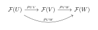
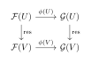
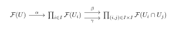
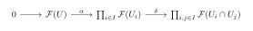
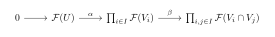
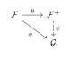
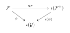

Preliminary
Presheaves and Sheaves
Presheaves and Sheaves
Presheaves
Definition of Presheaf
The concept of a sheaf is the fundamental tool for organizing local data over a topological space. Rather than defining it through a long list of axioms involving restriction maps, we adopt the language of category theory. This perspective reveals that a presheaf is simply a contravariant functor, and a morphism of presheaves is a natural transformation.
To treat presheaves as functors, we must first view the topology of a space as a category.
Definition 3.1 (The Category \mathsf{Open}(X)). Let X be a topological space. We define the category \mathsf{Open}(X) as follows:
Objects: The open subsets U \subseteq X.
Morphisms: For any two open sets U, V, the set of morphisms is defined by inclusion: \operatorname{Hom}_{\mathsf{Open}(X)}(V, U) = \begin{cases} \{\iota_{V}^{U}\} & \text{if } V \subseteq U, \\ \emptyset & \text{otherwise}, \end{cases} where \iota_{V}^{U}: V \hookrightarrow U denotes the inclusion map.
Composition of morphisms corresponds to the transitivity of inclusion (W \subseteq V \subseteq U).
Here are a few concrete examples from standard topology to build intuition:
Example 3.1 (The Discrete Metric Space). Let X = \mathbb{Z} with the discrete metric (every subset is open).
The objects of \mathsf{Open}(\mathbb{Z}) are all subsets of \mathbb{Z}. For any two subsets A, B \subseteq \mathbb{Z}, there exists a unique morphism A \to B if and only if A is a subset of B.
In this case, \mathsf{Open}(\mathbb{Z}) is isomorphic to the power set poset category (\mathcal{P}(\mathbb{Z}), \subseteq).
Example 3.1 (The Real Line with the Standard Topology). Let X = \mathbb{R} equipped with the standard Euclidean topology. The objects include all open intervals (a, b), open rays (a, \infty), and their arbitrary unions.
Consider the objects U = (0, 1) and V = (0, 2). Since (0,1) \subset (0,2), there is a unique morphism \iota: (0,1) \to (0,2). Conversely, for W = (1, 3), we have \operatorname{Hom}_{\mathsf{Open}(\mathbb{R})}((0,1), (1,3)) = \emptyset because (0,1) is not contained in (1,3), even though they are both open sets of the same ambient space.
Example 3.1 (The Indiscrete Topology). Let X = \{a, b, c\} be a set with the indiscrete topology, meaning the only open sets are the empty set \emptyset and the whole space X.
The category \mathsf{Open}(X) consists of exactly two objects: \emptyset and X. The morphisms are given by: \operatorname{Hom}(\emptyset, \emptyset) = \{\operatorname{id}_{\emptyset}\}, \quad \operatorname{Hom}(X, X) = \{\operatorname{id}_X\}, \quad \operatorname{Hom}(\emptyset, X) = \{\iota_{\emptyset, X}\}, \quad \operatorname{Hom}(X, \emptyset) = \emptyset. This forms a simple arrow category \bullet \to \bullet, which serves as a minimal example of a site.
Example 3.1 (The Sierpiński Space). Let X = \{0, 1\} with the topology \tau = \{\emptyset, \{1\}, \{0, 1\}\}. The objects of \mathsf{Open}(X) are \emptyset, \{1\}, and \{0, 1\}.
The non-identity morphisms are the inclusions: \emptyset \hookrightarrow \{1\}, \quad \{1\} \hookrightarrow \{0, 1\}, \quad \text{and by composition, } \emptyset \hookrightarrow \{0, 1\}. This category represents a totally ordered chain of three objects: \emptyset \to \{1\} \to X.
Let \mathcal{C} be a target category. In algebraic geometry, \mathcal{C} is typically the category of Abelian groups (\mathsf{Ab}), rings (\mathsf{Ring}), sets (\mathsf{Set}), or R-modules (\mathsf{Mod}_R) where R is a ring.
Definition 3.2 (Presheaf). A presheaf \mathcal{F} on X with values in \mathcal{C} is a contravariant functor from \mathsf{Open}(X) to \mathcal{C}. \mathcal{F}: \mathsf{Open}(X)^{\mathrm{op}} \longrightarrow \mathcal{C}.
Let us translate the functorial definition into classical terms to see that it recovers the familiar notion.
Objects (Sections): For every open set U, the functor assigns an object \mathcal{F}(U) in \mathcal{C}. Elements of \mathcal{F}(U) are called sections over U, often denoted by \Gamma(U, \mathcal{F}).
Morphisms (Restriction): For every inclusion V \hookrightarrow U (a morphism in \mathsf{Open}(X)), the contravariant functor assigns a morphism in \mathcal{C}: \rho_{UV}: \mathcal{F}(U) \longrightarrow \mathcal{F}(V). We usually write \rho_{UV}(s) = s|_V for a section s \in \mathcal{F}(U).
Functoriality (Axioms):
Identity: The functor preserves identity morphisms. The inclusion U \subseteq U maps to the identity map \operatorname{id}: \mathcal{F}(U) \to \mathcal{F}(U). Thus s|_U = s.
Composition: The functor preserves composition. If W \subseteq V \subseteq U, then the diagram commutes:

This means (s|_V)|_W = s|_W.
Examples of Presheaves
Let X be a topological space, and let \mathsf{Open}(X) be its category of open sets. Recall that a presheaf \mathcal{F} of sets (or abelian groups, rings, etc.) on X is a contravariant functor \mathcal{F}: \mathsf{Open}(X)^{\mathrm{op}} \to \mathsf{Set} (or \mathsf{Ab}, \mathsf{Ring}, etc.). For an inclusion of open sets V \subseteq U, the corresponding restriction morphism is denoted by \rho_{UV}: \mathcal{F}(U) \to \mathcal{F}(V).
Here are several foundational examples of presheaves arising from topology, analysis, and geometry.
Example 3.1 (The Constant Presheaf). Let S be a fixed non-empty set (or an abelian group). We define the constant presheaf associated to S, denoted by \mathcal{F}_S, as follows:
For every open set U \subseteq X, we set \mathcal{F}_S(U) = \begin{cases} S & \text{if } U \neq \emptyset, \\ \{*\} & \text{if } U = \emptyset, \end{cases} where \{*\} is a singleton set (or the zero group).
For any inclusion of non-empty open sets V \subseteq U, the restriction map \rho_{UV}: \mathcal{F}_S(U) \to \mathcal{F}_S(V) is the identity map \operatorname{id}_S. If V = \emptyset, \rho_{U\emptyset} is the unique map to the singleton.
Example 3.1 (The Presheaf of C^p Functions). Let X = \mathbb{R}^n (or more generally, a differentiable manifold). For any integer p \ge 0, we can define the presheaf of C^p real-valued functions, denoted by \mathcal{C}^p:
For every open set U \subseteq X, \mathcal{C}^p(U) is the set (or \mathbb{R}-algebra) of all p-times continuously differentiable functions f: U \to \mathbb{R}.
For an inclusion V \subseteq U, the restriction morphism \rho_{UV}: \mathcal{C}^p(U) \to \mathcal{C}^p(V) is the standard restriction of functions in the set-theoretic sense: \rho_{UV}(f) = f|_V.
Because differentiability is a local property, this presheaf satisfies the identity and gluing axioms, making it a sheaf (known as the sheaf of C^p functions).
Remark 3.1 (Smooth and Holomorphic Variants). By setting p = \infty, we obtain the sheaf of smooth functions \mathcal{C}^\infty. Similarly, if X is a complex manifold, replacing C^p functions with holomorphic functions yields the sheaf of holomorphic functions \mathcal{O}_X.
Example 3.1 (The Presheaf of L^p Functions). Let X = \mathbb{R}^n equipped with the standard Lebesgue measure, and fix 1 \le p \le \infty. We define the presheaf of L^p functions as follows:
For every open set U \subseteq X, \mathcal{L}^p(U) = L^p(U) is the Banach space of equivalence classes of Lebesgue measurable functions f: U \to \mathbb{R} such that \int_U |f|^p \, \operatorname{d}x < \infty (or essentially bounded if p=\infty).
For an inclusion V \subseteq U, the restriction map \rho_{UV}: L^p(U) \to L^p(V) maps an equivalence class [f] on U to its restriction [f|_V] on V.
Remark 3.1 (Why L^p is Not a Sheaf). Unlike the C^p example, the L^p condition is global rather than local. Consider X = \mathbb{R} and p=1. Let U_n = (n, n+2) for n \in \mathbb{Z}. We can define a function f_n(x) = 1 on each U_n. Locally, each f_n \in L^1(U_n). They agree on all overlaps U_n \cap U_m. However, they cannot be glued to a global function f \in L^1(\mathbb{R}), because \int_{-\mathbb{R}} 1 \, \operatorname{d}x = \infty. Thus, \mathcal{L}^p is a presheaf but not a sheaf.
Example 3.1 (The Presheaf of Sections of a Vector Bundle). Let X be a differentiable manifold, and let \pi: E \to X be a differentiable vector bundle over X (for instance, the tangent bundle T X \to X). We define the presheaf of continuous (or smooth) sections \mathcal{E}:
For every open set U \subseteq X, \mathcal{E}(U) is the vector space of continuous sections over U, i.e., continuous maps s: U \to E such that \pi \circ s = \operatorname{id}_U.
For an inclusion V \subseteq U, the restriction morphism \rho_{UV}: \mathcal{E}(U) \to \mathcal{E}(V) takes a section s over U and restricts its domain to V, yielding s|_V.
Since the condition \pi \circ s = \operatorname{id}_U is verified pointwise, sections can be uniquely glued together from local data. Therefore, the presheaf of sections of a vector bundle is always a sheaf.
Morphism of Presheaves
Since presheaves are functors, the appropriate notion of a morphism between them is provided by category theory.
Definition 3.3 (Morphism of Presheaves). Let \mathcal{F} and \mathcal{G} be presheaves on X with values in \mathcal{C}. A morphism \phi: \mathcal{F} \to \mathcal{G} is a natural transformation between the functors.
Explicitly, \phi consists of a
collection of morphisms \{\phi(U):
\mathcal{F}(U) \to \mathcal{G}(U)\} for each open U, such that for every inclusion V \subseteq U, the following diagram
commutes:

Remark 3.1 (The Category of Presheaves). Let X be a topological space (viewed as a category \mathsf{Open}(X) via inclusion) and \mathcal{C} a category. Recall that a presheaf on X with values in \mathcal{C} is precisely a contravariant functor from \mathsf{Open}(X) to \mathcal{C}. Thus, the category of presheaves is inherently a functor category: \mathsf{PSh}(X, \mathcal{C}) := \mathsf{Fun}(\mathsf{Open}(X)^{\mathrm{op}}, \mathcal{C}).
Limits and colimits in any functor category are computed pointwise (i.e., object by object in the domain). Consequently, if \mathcal{C} is an Abelian category (such as the category of Abelian groups \mathsf{Ab}), \mathsf{PSh}(X, \mathcal{C}) automatically inherits the structure of an Abelian category.
Because categorical constructions are evaluated pointwise, we can define kernels, cokernels, and exact sequences of presheaves simply by evaluating them on each open set U \subseteq X:
Kernel: (\ker \phi)(U) = \ker(\phi(U))
Cokernel: (\mathrm{coker}\, \phi)(U) = \mathrm{coker}(\phi(U))
Exactness: A sequence of presheaves \mathcal{F}' \to \mathcal{F} \to \mathcal{F}'' is exact if and only if \mathcal{F}'(U) \to \mathcal{F}(U) \to \mathcal{F}''(U) is exact in \mathcal{C} for every open set U.
Warning: While the category of sheaves \mathsf{Sh}(X, \mathcal{C}) is also abelian, its limits and colimits do not generally coincide with those in \mathsf{PSh}(X, \mathcal{C}). Specifically, the sheaf cokernel requires an extra sheafification step, meaning it does not behave pointwise.
Example 3.1 (The Differentiation Morphism). Let X = \mathbb{R}, and let \mathcal{C}^\infty be the sheaf (and hence presheaf) of smooth real-valued functions on \mathbb{R}. We can define a morphism of presheaves \frac{\operatorname{d}}{\operatorname{d}x}: \mathcal{C}^\infty \to \mathcal{C}^\infty as follows:
For each open set U \subseteq \mathbb{R}, the map \left(\frac{\operatorname{d}}{\operatorname{d}x}\right)_U: \mathcal{C}^\infty(U) \to \mathcal{C}^\infty(U) is given by standard differentiation, mapping a smooth function f to its derivative f'.
This defines a valid morphism of presheaves because differentiation commutes with restriction: taking the derivative of a function and then restricting it to a smaller open set V \subseteq U yields the same result as restricting the function first and then differentiating it, i.e., (f|_V)' = f'|_V.
Example 3.1 (The Inclusion of C^p Functions). Let X = \mathbb{R}^n, and let \mathcal{C}^1 and \mathcal{C}^0 be the presheaves of continuously differentiable functions and continuous functions, respectively. We can define an inclusion morphism \iota: \mathcal{C}^1 \to \mathcal{C}^0:
For each open set U \subseteq \mathbb{R}^n, since every continuously differentiable function is automatically continuous, we have a natural inclusion of sets (or \mathbb{R}-algebras): \iota_U: \mathcal{C}^1(U) \hookrightarrow \mathcal{C}^0(U), \quad f \mapsto f.
The compatibility with restriction maps is trivial: if V \subseteq U, then restricting a differentiable function to V and treating it as a continuous function is identical to treating it as a continuous function on U first and then restricting it to V.
Example 3.1 (Evaluation at a Fixed Point). Let X be a topological space, and fix a point x_0 \in X. Let \mathcal{C}^0 be the presheaf of continuous real-valued functions on X, and let \mathcal{F}_{\mathbb{R}} be the constant presheaf associated to the set \mathbb{R}. We can define an evaluation morphism E: \mathcal{C}^0 \to \mathcal{F}_{\mathbb{R}} as follows:
For an open set U \subseteq X, if x_0 \notin U, then \mathcal{F}_{\mathbb{R}}(U) = \mathbb{R} (if U \neq \emptyset) or \{*\} (if U = \emptyset). We define E_U to be the constant zero map sending every function to 0 (or to *).
If x_0 \in U, we define the evaluation map: E_U: \mathcal{C}^0(U) \to \mathbb{R}, \quad f \mapsto f(x_0).
To see that this commutes with restriction, let V \subseteq U. If x_0 \in V, then x_0 \in U as well, and evaluating the restricted function f|_V at x_0 yields f(x_0), which matches the restriction in the constant presheaf (the identity map on \mathbb{R}).
Sheaves
Definition of Sheaf
A presheaf provides data over open sets, but it does not guarantee that this data behaves geometrically. The concept of a sheaf enforces the "local-to-global" principle: global data is precisely determined by compatible local data.
Let X be a topological space and let \mathcal{F} be a presheaf on X. Let U \subseteq X be an open set and let \mathcal{U} = \{U_i\}_{i \in I} be an open covering of U (i.e., U = \bigcup_{i \in I} U_i).
We can form a sequence of maps based on the restrictions:

The map \alpha sends a section s \in \mathcal{F}(U) to the family of its restrictions: \alpha(s) = (s|_{U_i})_{i \in I}.
The maps \beta and \gamma act on a family (s_i)_{i \in I} by restricting to the overlaps: \beta((s_i)) = (s_i|_{U_i \cap U_j})_{i,j} \quad \text{and} \quad \gamma((s_i)) = (s_j|_{U_i \cap U_j})_{i,j}.
Definition 3.4 (Sheaf). A presheaf \mathcal{F} is a sheaf if for every open set U and every open covering \{U_i\} of U, the object \mathcal{F}(U) is the equalizer of the maps \beta and \gamma.
In the category of Abelian groups (or rings, modules), the
condition that \mathcal{F}(U) is
the equalizer is equivalent to the exactness of the following
sequence:

The exactness of the sequence above encodes two fundamental geometric axioms:
Injectivity (Monopresheaf / Separatedness): The map \alpha is injective.
Translation: If s, t \in \mathcal{F}(U) satisfy s|_{U_i} = t|_{U_i} for all i, then s = t. (Local equality implies global equality).
Exactness in the Middle (Gluing / Existence): The image of \alpha is the kernel of \delta.
Translation: Given a family of local sections s_i \in \mathcal{F}(U_i) that are compatible on overlaps (s_i|_{U_{ij}} = s_j|_{U_{ij}}), there exists a global section s \in \mathcal{F}(U) that restricts to each s_i.
Stalk
While sheaves encode data over open sets, we often need to focus on the behavior of the data near a single point. This leads to the concept of the stalk.
Definition 3.5 (Stalk). Let \mathcal{F} be a presheaf on X and let x \in X. The stalk of \mathcal{F} at x, denoted \mathcal{F}_x, is the direct limit (colimit) of the sections over all open neighborhoods of x: \mathcal{F}_x := \varinjlim_{U \ni x} \mathcal{F}(U).
Elements of \mathcal{F}_x are called germs. A germ is represented by a pair (U, s) where x \in U and s \in \mathcal{F}(U). Two pairs (U, s) and (V, t) define the same germ in \mathcal{F}_x if there exists a smaller neighborhood W \subseteq U \cap V containing x such that s|_W = t|_W. We denote the image of a section s \in \mathcal{F}(U) in the stalk by s_x.
One of the most powerful features of sheaf theory is that many global properties can be checked point-by-point on stalks.
Theorem 3.1 (Exactness of the Stalk Functor). Let X be a topological space and x \in X a point. The stalk functor (-)_x: \mathsf{Sh}(X) \longrightarrow \mathsf{Ab} is an exact functor. That is, if 0 \to \mathcal{F}' \xrightarrow{\phi} \mathcal{F} \xrightarrow{\psi} \mathcal{F}'' \to 0 is a short exact sequence of sheaves on X, then the induced sequence of Abelian groups 0 \longrightarrow \mathcal{F}'_x \xrightarrow{\phi_x} \mathcal{F}_x \xrightarrow{\psi_x} \mathcal{F}''_x \longrightarrow 0 is also exact.
Proof. We break the proof into three parts: injectivity of \phi_x, exactness at \mathcal{F}_x, and surjectivity of \psi_x.
Step 1. Injectivity of \phi_x (\ker \phi_x = 0) Let [s]_x \in \mathcal{F}'_x be an element represented by a local section s \in \mathcal{F}'(U) for some open neighborhood U of x, and suppose \phi_x([s]_x) = 0. By definition of the stalk, the image section \phi(s) \in \mathcal{F}(U) vanishes in some smaller neighborhood V \subseteq U containing x, i.e., \phi(s)|_V = 0. Since \phi is a sheaf morphism, \phi(s)|_V = \phi_V(s|_V) = 0. Because the original sequence of sheaves is exact, \phi is a monomorphism, which implies each \phi_V: \mathcal{F}'(V) \to \mathcal{F}(V) is injective. Thus, s|_V = 0, which implies its equivalence class in the stalk is zero, [s]_x = 0. Hence, \phi_x is injective.
Step 2. Exactness at \mathcal{F}_x (\operatorname{im} \phi_x = \ker \psi_x) Since \psi \circ \phi = 0 as sheaf morphisms, it immediately follows that \psi_x \circ \phi_x = 0, so \operatorname{im} \phi_x \subseteq \ker \psi_x.
Conversely, let [t]_x \in \mathcal{F}_x represented by t \in \mathcal{F}(U) such that \psi_x([t]_x) = 0. Then there exists an open neighborhood V \subseteq U of x such that \psi(t)|_V = \psi_V(t|_V) = 0. By the exactness of the sheaf sequence, the kernel sheaf of \psi is isomorphic to the image sheaf of \phi. Locally, this means after possibly shrinking V to a smaller neighborhood W \subseteq V containing x, the section t|_W lifts to a section s \in \mathcal{F}'(W) such that \phi_W(s) = t|_W. Passing to the stalk at x, we obtain: [t]_x = [t|_W]_x = [\phi_W(s)]_x = \phi_x([s]_x) Thus, [t]_x \in \operatorname{im} \phi_x, proving \ker \psi_x \subseteq \operatorname{im} \phi_x.
Step 3. Surjectivity of \psi_x (\operatorname{im} \psi_x = \mathcal{F}''_x) Let [u]_x \in \mathcal{F}''_x represented by u \in \mathcal{F}''(U). Since the sheaf sequence is exact at \mathcal{F}'', the morphism \psi is an epimorphism of sheaves. By definition, \psi is locally surjective: there exists an open neighborhood V \subseteq U of x and a local section t \in \mathcal{F}(V) such that \psi_V(t) = u|_V. Taking the image under \psi_x in the stalk, we have: \psi_x([t]_x) = [\psi_V(t)]_x = [u|_V]_x = [u]_x Thus, \psi_x is surjective. ◻
Corollary 3.1 (Isomorphism of Sheaves via Stalks). A morphism of sheaves \phi: \mathcal{F} \to \mathcal{G} is an isomorphism if and only if the induced map on stalks \phi_x: \mathcal{F}_x \longrightarrow \mathcal{G}_x is an isomorphism of Abelian groups for every point x \in X.
Proof. (\Longrightarrow) If \phi is an isomorphism, there exists an inverse morphism \phi^{-1}: \mathcal{G} \to \mathcal{F} such that \phi \circ \phi^{-1} = \mathrm{id}_{\mathcal{G}} and \phi^{-1} \circ \phi = \mathrm{id}_{\mathcal{F}}. Since the stalk operation (-)_x is a functor, it preserves composition and identities. Thus, \phi_x \circ (\phi^{-1})_x = \mathrm{id}_{\mathcal{G}_x} and (\phi^{-1})_x \circ \phi_x = \mathrm{id}_{\mathcal{F}_x}, meaning \phi_x is an isomorphism for every x \in X.
(\Longleftarrow) Suppose \phi_x is an isomorphism for all x \in X. Consider the short sequence of sheaves: 0 \longrightarrow \ker \phi \longrightarrow \mathcal{F} \xrightarrow{\phi} \mathcal{G} \longrightarrow \mathrm{coker}\, \phi \longrightarrow 0 Since the stalk functor is exact (Theorem ), it preserves kernels and cokernels, yielding the exact sequence of Abelian groups for each x \in X: 0 \longrightarrow (\ker \phi)_x \longrightarrow \mathcal{F}_x \xrightarrow{\phi_x} \mathcal{G}_x \longrightarrow (\mathrm{coker}\, \phi)_x \longrightarrow 0 Because \phi_x is given to be an isomorphism, its kernel and cokernel as a map of Abelian groups are zero. By exactness of the sequence, we must have: (\ker \phi)_x = 0 \quad \text{and} \quad (\mathrm{coker}\, \phi)_x = 0 \quad \forall x \in X A sheaf whose stalks are all zero is globally the zero sheaf (since any section vanishing at all stalks must vanish locally by the sheaf axioms, hence is globally zero). Therefore, \ker \phi \cong 0 and \mathrm{coker}\, \phi \cong 0. This implies \phi is both a monomorphism and an epimorphism in the Abelian category \mathsf{Sh}(X), hence \phi is an isomorphism. ◻
Example 3.1 (Stalk of the Constant Presheaf). Let X be a topological space, and let \mathcal{F}_S be the constant presheaf associated to a non-empty set S. For any point x \in X, the stalk (\mathcal{F}_S)_x is isomorphic to S.
Indeed, for any open neighborhood U of x, we have \mathcal{F}_S(U) = S.
Since the restriction maps between any two non-empty open neighborhoods containing x are the identity maps on S, the direct limit along this directed system of neighborhoods is simply S itself.
Example 3.1 (Stalk of Continuous Functions (The Ring of Continuous Germs)). Let X = \mathbb{R}^n, and let \mathcal{C}^0 be the sheaf of continuous real-valued functions. For a point x \in \mathbb{R}^n, the stalk \mathcal{C}^0_x represents the ring of germs of continuous functions at x.
For instance, consider the functions f(y) = |y| and g(y) = y on \mathbb{R}. At the point x = 1, they define the same germ in \mathcal{C}^0_1 because on the open neighborhood U = (0, \infty) containing 1, f(y) = g(y) = y, meaning f|_U = g|_U.
However, at the point x = 0, they define completely distinct germs in \mathcal{C}^0_0, because there is no open interval containing 0 where |y| and y coincide.
Note that \mathcal{C}^0_x is a local ring, whose unique maximal ideal consists of all germs of continuous functions that vanish at x.
Example 3.1 (Stalk of Analytic Functions and Power Series). Let X = \mathbb{R}, and let \mathcal{C}^\omega be the sheaf of real-analytic functions (functions that can be locally expanded into a convergent power series). Let x \in \mathbb{R} be a point.
Every real-analytic function f in a neighborhood of x is uniquely determined by its Taylor series expansion centered at x: \sum_{n=0}^\infty \frac{f^{(n)}(x)}{n!} (y - x)^n
By the identity theorem for analytic functions, if two analytic functions agree on a small open neighborhood of x, their Taylor series at x must be identical, and conversely, they must agree on the connected component containing x.
Therefore, the stalk \mathcal{C}^\omega_x is isomorphic to the ring of convergent power series centered around x, denoted by \mathbb{R}\{y - x\}.
Example 3.1 (Stalk of L^p Functions). Let X = \mathbb{R} with the standard topology and Lebesgue measure, and let \mathcal{L}^1 be the presheaf of integrable functions. For any point x \in \mathbb{R}, the stalk \mathcal{L}^1_x is the zero element \{0\}.
Let [f] \in \mathcal{L}^1(U) be an equivalence class of a function represented by f: U \to \mathbb{R} on an open neighborhood U of x.
Since the Lebesgue measure of a singleton set \{x\} is zero, we can always redefine f on a sequence of shrinking neighborhoods (x-\epsilon, x+\epsilon) to be identically zero without changing its equivalence class in L^1(U).
More formally, if we take any f \in L^1(U), its restriction to a sufficiently small neighborhood can be made arbitrarily small in the L^1-norm, and the direct limit over neighborhoods collapses every element to a single equivalence class. Hence, \mathcal{L}^1_x \cong 0.
Extension Theorem
While the definition above is elegant, checking it in practice is daunting. The definition requires the axioms to hold for arbitrary open sets U and arbitrary coverings. This raises a natural question: Is it sufficient to verify the sheaf axioms only for a basis of the topology?
The answer is affirmative and leads to the Extension Theorem, which we discuss next. This theorem allows us to construct sheaves by defining them only on affine open sets and extending uniquely.
Definition 3.6 (Basis of Topology). Let X be a topological space. A collection of open sets \mathcal{B} is a basis if:
\mathcal{B} covers X.
For any U, V \in \mathcal{B} and x \in U \cap V, there exists W \in \mathcal{B} such that x \in W \subseteq U \cap V.
(Note: In our applications, the intersection of two basic sets is often itself a basic set, e.g., D(f) \cap D(g) = D(fg), which simplifies things further.)
Definition 3.7 (Sheaf on a Basis / \mathcal{B}-Sheaf). Let \mathcal{B} be a basis for X. A \mathcal{B}-sheaf \mathcal{F} consists of:
For every U \in \mathcal{B}, an Abelian group (or ring/module) \mathcal{F}(U).
For every inclusion V \subseteq U with U, V \in \mathcal{B}, a restriction map \rho_{UV}: \mathcal{F}(U) \to \mathcal{F}(V), satisfying the usual presheaf axioms (identity and composition).
Gluing Axiom: For any U \in \mathcal{B} and any covering \{V_i\}_{i \in I} of U by basic sets V_i \in \mathcal{B}, the sequence

is exact.
Theorem 3.1 (Extension Theorem for Sheaves on a Basis). Let \mathcal{B} be a basis for X and \mathcal{F} be a \mathcal{B}-sheaf. Then:
There exists a sheaf \mathcal{F}_{ext} on X extending \mathcal{F}, meaning \mathcal{F}_{ext}(U) \cong \mathcal{F}(U) naturally for all U \in \mathcal{B}.
This extension is unique up to unique isomorphism.
The stalks of \mathcal{F}_{ext} are isomorphic to the stalks computed using the basis limits.
Proof. Let \mathcal{B} be a basis for the topology of X and let \mathcal{F} be a \mathcal{B}-sheaf.
Step 1: Construction via Inverse Limits. For an arbitrary open set U \subseteq X, we define \mathcal{F}_{ext}(U) not by a random assignment, but by the "limit" of all information available on the basis subsets. \mathcal{F}_{ext}(U) := \varprojlim_{V \in \mathcal{B}, V \subseteq U} \mathcal{F}(V). Explicitly, an element s \in \mathcal{F}_{ext}(U) is a collection of sections s = (s_V)_{V \subseteq U, V \in \mathcal{B}} such that for any inclusion W \subseteq V of basis sets inside U, the restriction holds: s_V|_W = s_W. The restriction maps for \mathcal{F}_{ext} are defined naturally by restricting the family of subsets. This clearly defines a presheaf.
Step 2: Verification of the Sheaf Axioms. We must show that \mathcal{F}_{ext} is a sheaf. Let U = \bigcup_{i \in I} U_i be an open covering.
Injectivity (Separatedness): Suppose s \in \mathcal{F}_{ext}(U) restricts to 0 on each U_i. This means for every i, the family defining s vanishes on all basis sets contained in U_i. For any basis set V \subseteq U, we have V = \bigcup_i (V \cap U_i). Since \mathcal{B} is a basis, each V \cap U_i is covered by basis sets \{W_{ij}\}. Since s vanishes on U_i, it vanishes on W_{ij}. Because \mathcal{F} is a \mathcal{B}-sheaf (satisfying the sheaf axiom on the basis), the fact that s_V vanishes on a basic cover \{W_{ij}\} of V implies s_V = 0. Thus s = 0.
Surjectivity (Gluing): Let s^{(i)} \in \mathcal{F}_{ext}(U_i) be a compatible family. We want to construct a global s. For any basis set V \subseteq U, the family \{V \cap U_i\} covers V. Again, refine this to a basis cover \{W_{ij}\} of V, where W_{ij} \subseteq U_i. On each W_{ij}, we have a section provided by s^{(i)}. By the compatibility of s^{(i)} and s^{(j)}, these agree on overlaps. Since \mathcal{F} is a \mathcal{B}-sheaf, these sections glue uniquely to a section s_V \in \mathcal{F}(V). The collection (s_V) forms the requiUniBlue global section s.
Step 3: Compatibility with the Basis. For U \in \mathcal{B}, is \mathcal{F}_{ext}(U) \cong \mathcal{F}(U)? Yes. The element U is the terminal object in the system of basis sets contained in U. The inverse limit over a system with a terminal object is simply the value at that object. Thus \mathcal{F}_{ext}(U) \cong \mathcal{F}(U).
Step 4: Uniqueness. Any sheaf \mathcal{G} is determined by its values on a basis, because for any U, \mathcal{G}(U) must be the equalizer of the product of its restrictions to a basic cover. This forces \mathcal{G}(U) \cong \varprojlim \mathcal{G}(V) for V \in \mathcal{B}. ◻
Sheafification
A presheaf \mathcal{F} may fail to be a sheaf. We wish to associate to it the "best possible" sheaf \mathcal{F}^+. In the spirit of high-level mathematics, we define this object via its relationship to all other sheaves, rather than by its internal construction.
Let \iota: \mathsf{Sh}(X) \hookrightarrow \mathsf{PSh}(X) be the inclusion (forgetful) functor.
Definition 3.8 (Sheafification). The
sheafification of a presheaf \mathcal{F} is a sheaf \mathcal{F}^+ together with a morphism
of presheaves \theta: \mathcal{F} \to
\mathcal{F}^+ satisfying the following universal
property: For any sheaf \mathcal{G} and any presheaf morphism
\phi: \mathcal{F} \to
\mathcal{G}, there exists a unique morphism of sheaves
\psi: \mathcal{F}^+ \to
\mathcal{G} such that the diagram commutes:

In categorical terms, sheafification is the left adjoint to the inclusion functor \iota: \operatorname{Hom}_{\mathsf{Sh}(X)}(\mathcal{F}^+, \mathcal{G}) \cong \operatorname{Hom}_{\mathsf{PSh}(X)}(\mathcal{F}, \iota(\mathcal{G})). This definition guarantees that if \mathcal{F}^+ exists, it is unique up to unique isomorphism.
Proposition 3.1 (Adjointness via Universal Property). Let X be a topological space, \mathsf{PSh}(X) the category of presheaves on X, and \mathsf{Sh}(X) the category of sheaves on X. Let \iota: \mathsf{Sh}(X) \to \mathsf{PSh}(X) be the forgetful (inclusion) functor. The sheafification functor (-)^+: \mathsf{PSh}(X) \to \mathsf{Sh}(X) is left adjoint to \iota, i.e., there is a natural isomorphism: \operatorname{Hom}_{\mathsf{Sh}(X)}(\mathcal{F}^+, \mathcal{G}) \cong \operatorname{Hom}_{\mathsf{PSh}(X)}(\mathcal{F}, \iota(\mathcal{G})) for any presheaf \mathcal{F} \in \mathsf{PSh}(X) and sheaf \mathcal{G} \in \mathsf{Sh}(X).
Proof. By definition, the sheafification of a presheaf \mathcal{F} comes equipped with a canonical presheaf morphism \eta_{\mathcal{F}}: \mathcal{F} \to \iota(\mathcal{F}^+) satisfying the following universal property:
For any sheaf \mathcal{G} and
any morphism of presheaves \phi:
\mathcal{F} \to \iota(\mathcal{G}), there exists a
unique morphism of sheaves \psi: \mathcal{F}^+ \to \mathcal{G}
such that the following diagram in \mathsf{PSh}(X) commutes:

This universal property directly defines a mapping between the hom-sets: \begin{align*} \Phi: \operatorname{Hom}_{\mathsf{Sh}(X)}(\mathcal{F}^+, \mathcal{G}) &\longrightarrow \operatorname{Hom}_{\mathsf{PSh}(X)}(\mathcal{F}, \iota(\mathcal{G})) \\ \psi &\longmapsto \iota(\psi) \circ \eta_{\mathcal{F}} \end{align*}
We check that \Phi is a bijection:
Surjectivity: For any \phi \in \operatorname{Hom}_{\mathsf{PSh}(X)}(\mathcal{F}, \iota(\mathcal{G})), the existence part of the universal property guarantees there is a \psi \in \operatorname{Hom}_{\mathsf{Sh}(X)}(\mathcal{F}^+, \mathcal{G}) such that \Phi(\psi) = \phi.
Injectivity: The uniqueness part of the universal property guarantees that if \Phi(\psi_1) = \Phi(\psi_2) = \phi, then \psi_1 = \psi_2.
Hence, \Phi is a bijection for every pair (\mathcal{F}, \mathcal{G}). The naturality in both arguments follows automatically from the canonical nature of \eta_{\mathcal{F}} and \iota. Thus, \big((-)^+, \iota\big) forms an adjoint pair. ◻
Construction of Sheafification
Motivated by the local-to-global principle, we construct the sheafification using the limit of compatible sections over open covers. This approach avoids the explicit construction of the bundle of stalks (the "espace étalé") and relies solely on the categorical properties of limits and colimits.
Definition 3.9 (The Plus Construction). Let X be a topological space and \mathcal{F} a presheaf on X. For any open set U \subseteq X, let \mathfrak{C}(U) be the set of all open covers \mathcal{U} = \{U_i\}_{i \in I} of U. This set is directed by refinement: \mathcal{V} \geq \mathcal{U} if every open set in \mathcal{V} is contained in some open set in \mathcal{U}.
For a cover \mathcal{U} = \{U_i\}, we define the 0-th Čech cohomology group \check{H}^0(\mathcal{U}, \mathcal{F}) as the kernel of the difference map: \check{H}^0(\mathcal{U}, \mathcal{F}) := \operatorname{Ker}\left( \prod_{i \in I} \mathcal{F}(U_i) \xrightarrow{\operatorname{d}^0 - \operatorname{d}^1} \prod_{i, j \in I} \mathcal{F}(U_i \cap U_j) \right), where the maps are induced by restrictions: \operatorname{d}^0((s_i))|_{U_{ij}} = s_i|_{U_{ij}} and \operatorname{d}^1((s_i))|_{U_{ij}} = s_j|_{U_{ij}}.
We define the presheaf \mathcal{F}^+ as the directed limit over the refinements: \mathcal{F}^+(U) := \varinjlim_{\mathcal{U} \in \mathfrak{C}(U)} \check{H}^0(\mathcal{U}, \mathcal{F}). The restriction maps for \mathcal{F}^+ are naturally induced by the restriction maps of \mathcal{F}.
There is a canonical presheaf morphism \theta: \mathcal{F} \to \mathcal{F}^+. For any s \in \mathcal{F}(U), its image is defined by the trivial cover \{U\} (where compatibility is automatic).
We provide the complete proof that the double-plus construction \mathcal{F}^{\#} := (\mathcal{F}^+)^+ constitutes the sheafification.
Definition 3.10 (Separated Presheaf). A presheaf \mathcal{F} is called separated (or a monopresheaf) if for any open set U and any open cover \{U_i\} of U, the first map in the sheaf sequence is injective: 0 \longrightarrow \mathcal{F}(U) \longrightarrow \prod_{i} \mathcal{F}(U_i)
Lemma 3.1 (Plus Construction Yields a Separated Presheaf). For any presheaf \mathcal{F}, the presheaf \mathcal{F}^+ is separated.
Proof. Let U be an open set and \{U_i\}_{i \in I} be an open cover of U. Suppose s \in \mathcal{F}^+(U) is a section such that s|_{U_i} = 0 for all i. We must show s = 0.
By the definition of the directed limit, s is represented by an element \sigma \in \check{H}^0(\mathcal{V}, \mathcal{F}) for some cover \mathcal{V} = \{V_j\}_{j \in J} of U. The condition s|_{U_i} = 0 implies that for each i, the restriction of \sigma to the refinement on U_i becomes zero in the directed limit over U_i.
Since the limit is directed, this means there exists a refinement of the cover restricted to U_i where the representative vanishes explicitly. Since \{U_i\} covers U, we can combine these local refinements into a single global refinement \mathcal{W} of \mathcal{V} (essentially consisting of open sets contained in V_j \cap U_i). On this refinement \mathcal{W}, the representative of s is zero. Thus s represents the zero element in \varinjlim \check{H}^0(\cdot, \mathcal{F}). Hence, \mathcal{F}^+ is separated. ◻
Lemma 3.1 (Plus Construction on Separated Presheaf Yields Sheaf). If \mathcal{F} is a separated presheaf, then \mathcal{F}^+ is a sheaf.
Proof. Since \mathcal{F} is separated, the canonical map \mathcal{F} \to \mathcal{F}^+ is injective. We know from the previous lemma that \mathcal{F}^+ is separated, so we only need to verify the gluing property.
Let \{U_i\} be a cover of U, and let s_i \in \mathcal{F}^+(U_i) be sections such that s_i|_{U_i \cap U_j} = s_j|_{U_i \cap U_j}. Each s_i is represented by a family of sections in \mathcal{F} defined on some cover \mathcal{V}_i of U_i. Let \mathcal{W} = \bigcup_i \mathcal{V}_i. This is a cover of U.
Because \mathcal{F} is separated, the compatibility of the elements s_i in \mathcal{F}^+ implies that the underlying representatives in \mathcal{F} (defined on the fine grid \mathcal{W}) satisfy the cocycle condition on overlaps (potentially after passing to a further refinement). Specifically, since \mathcal{F} is separated, "being compatible in the limit" descends to "being compatible on a sufficiently fine cover".
Therefore, the collection of all these local representatives defines an element in \check{H}^0(\mathcal{W}, \mathcal{F}). This element defines a global section s \in \mathcal{F}^+(U). By construction, s|_{U_i} = s_i. Thus \mathcal{F}^+ is a sheaf. ◻
Theorem 3.1 (Construction and Uniqueness). Let \mathcal{F} be a presheaf. Let \mathcal{F}^\sharp := (\mathcal{F}^+)^+. Then:
\mathcal{F}^\sharp is a sheaf.
The natural map \theta: \mathcal{F} \to \mathcal{F}^\sharp satisfies the universal property of sheafification.
Proof. 1. Sheaf Property: By Lemma 1, \mathcal{F}^+ is a separated presheaf. By Lemma 2, applying the plus construction to a separated presheaf yields a sheaf. Thus (\mathcal{F}^+)^+ is a sheaf.
2. Universal Property: Let \mathcal{G} be a sheaf and \phi: \mathcal{F} \to \mathcal{G} be a morphism. We wish to factor this uniquely through \mathcal{F} \to \mathcal{F}^+. Note that since \mathcal{G} is a sheaf, \mathcal{G} \cong \mathcal{G}^+. (The limit of compatible sections of a sheaf is just the sections of the sheaf itself). The morphism \phi induces a morphism on the limits: \phi^+: \mathcal{F}^+ \longrightarrow \mathcal{G}^+ \cong \mathcal{G}. If we iterate this, we get \phi^\sharp : \mathcal{F}^\sharp \to \mathcal{G}^\sharp \cong \mathcal{G}. This gives existence.
For uniqueness, suppose we have two extensions \psi_1, \psi_2: \mathcal{F}^\sharp \to \mathcal{G}. Their difference allows us to define a kernel. Since \mathcal{F} \to \mathcal{F}^\sharp induces an isomorphism on stalks (as proven in the Proposition on stalks), and a morphism of sheaves is determined by its action on stalks, if \psi_1 and \psi_2 agree on \mathcal{F}, they agree on all stalks of \mathcal{F}^\sharp, and thus must be identical. ◻
Remark 3.1 (Why Double Plus?). In many modern treatments (e.g., restricted to Noetherian schemes or specific topologies), one step often suffices, or the limit is taken differently. However, the double-plus construction is the rigorous categorical solution for arbitrary topological spaces.
Example 3.1 (Sheafification of the Constant Presheaf: The Locally Constant Sheaf). Let X be a topological space, and let S be a discrete set (or an abelian group). Let \mathcal{F}_S be the constant presheaf associated to S, where \mathcal{F}_S(U) = S for all non-empty open sets U.
The sheafification of \mathcal{F}_S, denoted by \underline{S}_X (or simply \underline{S}), is called the locally constant sheaf (or constant sheaf) associated to S.
For any open set U \subseteq X, a section of \underline{S}(U) consists of continuous functions f: U \to S, where S is given the discrete topology.
Equivalently, if U = \bigcup_{i} U_i is a decomposition of U into its connected components, then a section is given by choosing an element s_i \in S independently for each connected component U_i. Thus, \underline{S}(U) \cong \prod_{i} S
For example, if X = (0, 1) \cup (2, 3) \subseteq \mathbb{R} and S = \mathbb{Z}, the constant presheaf gives \mathcal{F}_{\mathbb{Z}}(X) = \mathbb{Z}. However, the sheafification gives \underline{\mathbb{Z}}(X) = \mathbb{Z} \times \mathbb{Z}, because we can choose one integer on the first interval and a completely different integer on the second interval, and they glue together perfectly to form a valid local choice of germs.
Example 3.1 (Sheafification of Bounded Functions). Let X = \mathbb{R}, and let \mathcal{B} be the presheaf of bounded continuous functions, where \mathcal{B}(U) is the set of all bounded continuous functions f: U \to \mathbb{R}. As shown in previous exercises, \mathcal{B} fails the gluing axiom because a family of bounded functions on a collection of open sets can glue together to form an unbounded function globally.
The sheafification of \mathcal{B} is the standard sheaf of continuous functions \mathcal{C}^0.
For any point x \in \mathbb{R}, a continuous function defined on an open interval U containing x is automatically bounded on a sufficiently small sub-neighborhood V \subseteq U containing x (by compactness of closed sub-intervals).
Therefore, the stalk of the presheaf of bounded functions \mathcal{B}_x is isomorphic to the stalk of the sheaf of continuous functions \mathcal{C}^0_x.
Since sheafification only depends on the stalks and their local behavior, constructing the associated sheaf from these germs removes the global bounding condition completely, yielding \mathcal{B}^+ = \mathcal{C}^0.
Algebraic Operations for Sheaves of Abelian Categories
Limits and Colimits of Sheaves
Definition 3.11 (Limits and Colimits of Sheaves). Let I be a index category, and let F: I \to \mathsf{Sh}(X) be a diagram of sheaves on a topological space X, denoting each object as \mathcal{F}_i := F(i).
The limit of the diagram in \mathsf{Sh}(X), denoted \varprojlim_{\mathsf{Sh}} \mathcal{F}_i, is the terminal object in the category of cones over the diagram F.
The colimit of the diagram in \mathsf{Sh}(X), denoted \varinjlim_{\mathsf{Sh}} \mathcal{F}_i, is the initial object in the category of cocones under the diagram F.
Proposition 3.1 (Asymmetry of Limits and Colimits). Let \iota: \mathsf{Sh}(X) \to \mathsf{PSh}(X) be the forgetful (inclusion) functor, and let (-)^+: \mathsf{PSh}(X) \to \mathsf{Sh}(X) be the sheafification functor (which is the left adjoint to \iota).
Limits are Presheaves: The forgetful functor \iota preserves all limits. That is, the limit of a diagram of sheaves computed in the category of presheaves is automatically a sheaf: \iota\left( \varprojlim_{\mathsf{Sh}} \mathcal{F}_i \right) \cong \varprojlim_{\mathsf{PSh}} \iota(\mathcal{F}_i). Evaluated on any open set U \subseteq X, we have \left(\varprojlim_{\mathsf{Sh}} \mathcal{F}_i\right)(U) \cong \varprojlim_{\mathsf{Ab}} (\mathcal{F}_i(U)).
Colimits Require Sheafification: The forgetful functor \iota generally does not preserve colimits. The colimit of a diagram of sheaves computed in the category of presheaves is only a presheaf, and one must apply sheafification to obtain the colimit in \mathsf{Sh}(X): \varinjlim_{\mathsf{Sh}} \mathcal{F}_i \cong \left( \varinjlim_{\mathsf{PSh}} \iota(\mathcal{F}_i) \right)^+.
Proof. (1) Since \iota: \mathsf{Sh}(X) \to \mathsf{PSh}(X) is a right adjoint functor (it has a left adjoint, namely the sheafification functor (-)^+), a standard theorem in category theory guarantees that every right adjoint functor preserves all limits. Thus, the presheaf limit \varprojlim_{\mathsf{PSh}} \iota(\mathcal{F}_i) satisfies the universal property of limits in \mathsf{Sh}(X), meaning it is already a sheaf. Since limits in the functor category \mathsf{PSh}(X) are computed pointwise, the section on U is simply the limit in \mathsf{Ab}.
(2) Conversely, right adjoint functors do not generally preserve colimits. If we compute the colimit purely in the presheaf category \varinjlim_{\mathsf{PSh}} \iota(\mathcal{F}_i) (which is done pointwise, i.e., U \mapsto \varinjlim_{\mathsf{Ab}} \mathcal{F}_i(U)), the resulting presheaf often fails to satisfy the sheaf axioms (specifically, the gluing axiom).
To remedy this, we use the fact that the left adjoint functor (-)^+ preserves colimits. For any diagram, we can view it in \mathsf{PSh}(X), take its presheaf colimit, and then project it back into \mathsf{Sh}(X) via sheafification. The universal property of the adjunction \operatorname{Hom}_{\mathsf{Sh}(X)}(\mathcal{P}^+, \mathcal{G}) \cong \operatorname{Hom}_{\mathsf{PSh}(X)}(\mathcal{P}, \iota(\mathcal{G})) ensures that \left( \varinjlim_{\mathsf{PSh}} \iota(\mathcal{F}_i) \right)^+ satisfies the correct universal property for the colimit inside \mathsf{Sh}(X). ◻
Subsheaves and Quotient Sheaves
Definition 3.12 (Subsheaves and Quotient Sheaves). Let \mathcal{F} be a sheaf of Abelian groups on X.
A subsheaf of \mathcal{F} is a sheaf \mathcal{F}' equipped with a monomorphism i: \mathcal{F}' \hookrightarrow \mathcal{F}.
A quotient sheaf of \mathcal{F} is a sheaf \mathcal{G} equipped with an epimorphism p: \mathcal{F} \twoheadrightarrow \mathcal{G}.
Proposition 3.1 (Pointwise Characterization). Let \phi: \mathcal{F} \to \mathcal{G} be a morphism of sheaves.
\phi is a monomorphism (making \mathcal{F} a subsheaf) if and only if for every open set U \subseteq X, the section map \phi_U: \mathcal{F}(U) \to \mathcal{G}(U) is injective.
\phi is an epimorphism (making \mathcal{G} a quotient sheaf) if and only if it is locally surjective. That is, \phi_U is not necessarily surjective, but for any open set U and any section s \in \mathcal{G}(U), there exists an open covering U = \bigcup V_i such that s|_{V_i} \in \operatorname{im}(\phi_{V_i}) for each i.
Proof. (1) (\Longleftarrow) Suppose \phi_U is injective for all U. Let \psi_1, \psi_2: \mathcal{H} \to \mathcal{F} be sheaf morphisms such that \phi \circ \psi_1 = \phi \circ \psi_2. Then for each open set U, \phi_U \circ (\psi_1)_U = \phi_U \circ (\psi_2)_U. Since \phi_U is an injective map of Abelian groups, it is cancelable on the left, so (\psi_1)_U = (\psi_2)_U for all U, meaning \psi_1 = \psi_2. Thus \phi is a monomorphism.
(\Longrightarrow) Suppose \phi is a monomorphism. This means \ker \phi \cong 0 in \mathsf{Sh}(X). Since kernels are computed pointwise (Proposition ), we have (\ker \phi)(U) \cong \ker(\phi_U) for every open set U. Since \ker \phi is the zero sheaf, its sections over any U must be zero. Therefore, \ker(\phi_U) = 0, which proves that \phi_U: \mathcal{F}(U) \to \mathcal{G}(U) is an injective group homomorphism.
(2) (\Longleftarrow) Suppose \phi is locally surjective. This implies that for every point x \in X, the induced stalk map \phi_x: \mathcal{F}_x \to \mathcal{G}_x is surjective (since any element in the stalk is represented by a local section, which can be lifted in a small enough neighborhood). Since \phi_x is surjective for all x, \mathrm{coker}(\phi_x) = 0. Because the stalk functor is exact and commutes with cokernels, (\mathrm{coker}\, \phi)_x \cong \mathrm{coker}(\phi_x) = 0 for all x. A sheaf with all stalks being zero is the zero sheaf, so \mathrm{coker}\, \phi \cong 0, which means \phi is an epimorphism.
(\Longrightarrow) Suppose \phi is an epimorphism, meaning \mathrm{coker}\, \phi \cong 0. By the exactness of the stalk functor, (\mathrm{coker}\, \phi)_x \cong \mathrm{coker}(\phi_x) = 0 for all x \in X, so \phi_x: \mathcal{F}_x \to \mathcal{G}_x is a surjective map of Abelian groups.
Now, let U \subseteq X be an open set and s \in \mathcal{G}(U). For each point x \in U, consider its image in the stalk [s]_x \in \mathcal{G}_x. Since \phi_x is surjective, there exists an element t_x \in \mathcal{F}_x such that \phi_x(t_x) = [s]_x. By definition of stalks, the element t_x can be represented by a local section t_i \in \mathcal{F}(V_i) on some open neighborhood V_i \subseteq U of x. The condition \phi_x(t_x) = [s]_x means that \phi(t_i) and s agree on the stalk at x. After possibly shrinking V_i, we can assume \phi_{V_i}(t_i) = s|_{V_i}. Doing this for every x \in U yields an open covering U = \bigcup V_i such that s|_{V_i} is in the image of \phi_{V_i}. Thus, \phi is locally surjective. ◻
Algebraic Operations on Stalks
The definitions of algebraic operations on sheaves (such as kernels, cokernels, images, and direct sums) may initially seem technically involved due to the necessity of the sheafification process.
However, the most fundamental takeaway is the stalk-wise principle: for any such operation, the stalk of the resulting sheaf is isomorphic to the corresponding algebraic operation applied directly to the stalks of the inputs. (\mathcal{F} \oplus \mathcal{G})_x \cong \mathcal{F}_x \oplus \mathcal{G}_x, \quad (\ker \phi)_x \cong \ker(\phi_x), \quad (\operatorname{coker} \phi)_x \cong \operatorname{coker}(\phi_x).
Conceptually, this elegant behavior is a direct consequence of the fact that the stalk functor (-)_x: \mathsf{Sh}(X) \to \mathsf{Ab} is an exact functor. In the language of category theory, an exact functor between Abelian categories enjoys crucial compatibility properties:
Commutativity with Finite Limits: Because (-)_x is left exact, it commutes with all finite limits. This guarantees that kernels and finite products (injections/intersections) can be computed purely on stalks, e.g., (\ker \phi)_x \cong \ker(\phi_x).
Commutativity with Finite Colimits: Because (-)_x is right exact, it commutes with all finite colimits. This ensures that cokernels, images, and finite coproducts (direct sums) also pass directly to stalks, e.g., (\mathrm{coker}\,\phi)_x \cong \mathrm{coker}(\phi_x).
Takeaway: Whenever you need to verify an exact sequence or compute an algebraic construction of sheaves, the exactness of the stalk functor allows you to instantly reduce the problem to standard linear/Abelian algebra on the stalks \mathcal{F}_x.
The following corollary is the computational heart of sheaf theory. It asserts that the operation of taking stalks commutes with all finite algebraic operations. In categorical terms, the stalk functor is exact.
Corollary 3.1 (Stalks of Derived Sheaves). Let X be a topological space. Let \phi: \mathcal{F} \to \mathcal{G} be a morphism of sheaves of Abelian groups, and let \{\mathcal{F}_i\} be a family of sheaves. For any point x \in X, the stalks of the derived sheaves are canonically isomorphic to the corresponding operations on the stalks of \mathcal{F} and \mathcal{G}:
Kernel: (\ker \phi)_x \cong \ker(\phi_x).
Cokernel: (\operatorname{coker} \phi)_x \cong \operatorname{coker}(\phi_x).
Image: (\operatorname{im} \phi)_x \cong \operatorname{im}(\phi_x).
Quotient: If \mathcal{F}' \subseteq \mathcal{F} is a subsheaf, (\mathcal{F}/\mathcal{F}')_x \cong \mathcal{F}_x / \mathcal{F}'_x.
Direct Sum: (\bigoplus \mathcal{F}_i)_x \cong \bigoplus (\mathcal{F}_i)_x.
Finite Product: If the index set is finite, (\prod \mathcal{F}_i)_x \cong \prod (\mathcal{F}_i)_x.
Consequently, a sequence of sheaves \mathcal{F}' \to \mathcal{F} \to \mathcal{F}'' is exact if and only if the sequence of stalks \mathcal{F}'_x \to \mathcal{F}_x \to \mathcal{F}''_x is exact for every x \in X.
Proof. By our discussions above. ◻
Morphisms of Sheaves
Properties of Sheaves and Morphisms
Theorem 3.1 (Properties of Morphisms of Sheaves). Let \phi: \mathcal{F} \to \mathcal{G} be a morphism. Let \mathcal{F} \xrightarrow{\phi} \mathcal{G} \xrightarrow{\psi} \mathcal{H} be a sequence. The following table summarizes the necessary and sufficient conditions for various properties.
| Property | Category of Presheaves | Category of Sheaves |
|---|---|---|
| Monomorphism | \forall U, \phi(U) is injective | \forall U, \phi(U) is injective |
| (Injectivity) | \iff \forall x, \phi_x is injective | |
| Epimorphism | \forall U, \phi(U) is surjective | \forall x, \phi_x is surjective |
| (Surjectivity) | \iff Locally surjective on sections | |
Isomorphism |
\forall U, \phi(U) is bijective | \forall x, \phi_x is bijective |
| (Bijectivity) | \iff \forall U, \phi(U) is bijective | |
Exactness |
\forall U, \text{Im } \phi(U) = \ker \psi(U) | \forall x, \text{Im } \phi_x = \ker \psi_x |
| at \mathcal{G} |
We now prove the non-trivial implications and provide counter-examples for the false ones.
1. Injectivity (Monomorphisms)
Presheaves: By definition of the category of functors, \phi is a monomorphism iff \phi(U) is injective for all U.
Sheaves: Since the kernel sheaf is defined section-wise (\ker(\phi)(U) = \ker(\phi(U))), a morphism of sheaves is injective iff it is injective on all sections. \phi is injective iff \ker(\phi) = 0. Since (\ker \phi)_x = \ker(\phi_x), this is equivalent to \ker(\phi_x) = 0 for all x. For sheaves, Section-Injectivity \iff Stalk-Injectivity.
2. Surjectivity (Epimorphisms)
Presheaves: \phi is an epimorphism iff \phi(U) is surjective for all U.
Sheaves: This is the subtle case. The cokernel sheaf is the sheafification of the presheaf cokernel. \phi is surjective iff \operatorname{coker}(\phi) = 0. Since (\operatorname{coker} \phi)_x = \operatorname{coker}(\phi_x), surjectivity is equivalent to \phi_x being surjective for all x.
Exercise 3.1. Stalk-Surjectivity does NOT imply Section-SurjectivityStalk-Surjectivity does NOT imply Section-Surjectivity Show the Exponential Sequence example (e^{2\pi i z}: \mathcal{O} \to \mathcal{O}^*). It is surjective on stalks (locally solvable), but not on global sections on \mathbb{C}^*.
Surjectivity of sheaves means "locally surjective". For any t \in \mathcal{G}(U), there is a cover U = \bigcup U_i and sections s_i \in \mathcal{F}(U_i) such that \phi(s_i) = t|_{U_i}.
3. Exactness
Presheaves: Exactness is defined pointwise on sections.
Sheaves: Exactness is defined by \operatorname{im}(\phi) = \ker(\psi) in the category of sheaves. Since stalk functor is exact, this is equivalent to exactness on stalks.
If a sequence of sheaves is exact as presheaves (section-wise exact), it is exact as sheaves (stalk-wise exact). The converse is false (due to the failure of surjectivity on sections).
Corollary 3.1 (Exactness Criterion for Sheaves). A sequence of sheaves 0 \to \mathcal{F}' \to \mathcal{F} \to \mathcal{F}'' \to 0 is exact if and only if:
For every open U, 0 \to \mathcal{F}'(U) \to \mathcal{F}(U) \to \mathcal{F}''(U) is exact (Injectivity and Kernel condition holds section-wise).
The map \mathcal{F} \to \mathcal{F}'' is locally surjective (Stalk-surjectivity).
Direct Image
We now study how sheaves move between different topological spaces via a continuous map f: X \to Y. The relationship is best understood through the lens of adjoint functors.
The direct image is the most straightforward operation: we "push" sections forward.
Definition 3.13 (Direct Image). Let f: X \to Y be a continuous map and \mathcal{F} a sheaf on X. The direct image sheaf f_*\mathcal{F} on Y is defined by: (f_*\mathcal{F})(V) := \mathcal{F}(f^{-1}(V)) \quad \text{for all open } V \subseteq Y. Restriction maps are induced naturally by the restrictions of \mathcal{F}.
Proposition 3.1 (Left Exactness). The functor f_*: \mathsf{Sh}(X) \to \mathsf{Sh}(Y) is left exact. That is, it preserves kernels and exact sequences of the form 0 \to \mathcal{F}' \to \mathcal{F} \to \mathcal{F}''.
Proof. This follows immediately because limits in the category of sheaves are computed section-wise, and the definition of f_* is just re-indexing sections. ◻
Inverse Image
The inverse image is subtler. We want a functor f^{-1}: \mathsf{Sh}(Y) \to \mathsf{Sh}(X) that is left adjoint to f_*. \operatorname{Hom}_{\mathsf{Sh}(X)}(f^{-1}\mathcal{G}, \mathcal{F}) \cong \operatorname{Hom}_{\mathsf{Sh}(Y)}(\mathcal{G}, f_*\mathcal{F}). This adjunction dictates how f^{-1} must be constructed.
Definition 3.14 (Inverse Image). Let \mathcal{G} be a sheaf on Y. We define f^{-1}\mathcal{G} in two steps:
Define the presheaf f^+ \mathcal{G} on X by the direct limit over neighborhoods: (f^+ \mathcal{G})(U) := \varinjlim_{V \supseteq f(U)} \mathcal{G}(V).
Define f^{-1}\mathcal{G} as the sheafification of this presheaf: f^{-1}\mathcal{G} := (f^+ \mathcal{G})^+.
Adjunction and Stalks
Theorem 3.1 (Adjunction and Stalks). The functor f^{-1} is the left adjoint to f_*. As a consequence (by LAPC), f^{-1} is right exact and preserves stalks: (f^{-1}\mathcal{G})_x \cong \mathcal{G}_{f(x)}.
We aim to establish a natural bijection: \operatorname{Hom}_{\mathsf{Sh}(X)}(f^{-1}\mathcal{G}, \mathcal{F}) \cong \operatorname{Hom}_{\mathsf{Sh}(Y)}(\mathcal{G}, f_*\mathcal{F}). Recall that f^{-1}\mathcal{G} is the sheafification of the presheaf f^+\mathcal{G}. By the universal property of sheafification (Adjunction of (-)^+ and inclusion), a morphism from a sheafification to a sheaf is determined uniquely by a morphism from the underlying presheaf: \operatorname{Hom}_{\mathsf{Sh}(X)}((f^+\mathcal{G})^+, \mathcal{F}) \cong \operatorname{Hom}_{\mathsf{PSh}(X)}(f^+\mathcal{G}, \mathcal{F}). Thus, the problem reduces to proving the adjunction at the presheaf level: \operatorname{Hom}_{\mathsf{PSh}(X)}(f^+\mathcal{G}, \mathcal{F}) \cong \operatorname{Hom}_{\mathsf{PSh}(Y)}(\mathcal{G}, f_*\mathcal{F}).
Proof. Let \Phi: \operatorname{Hom}_{\mathsf{PSh}(X)}(f^+\mathcal{G}, \mathcal{F}) \to \operatorname{Hom}_{\mathsf{PSh}(Y)}(\mathcal{G}, f_*\mathcal{F}) and \Psi be its inverse.
Step 1: Construction of \Phi (Left to Right): Let \alpha: f^+\mathcal{G} \to \mathcal{F} be a morphism of presheaves on X. We want to construct \beta: \mathcal{G} \to f_*\mathcal{F}. For any open V \subseteq Y, we need a map \beta_V: \mathcal{G}(V) \to (f_*\mathcal{F})(V) = \mathcal{F}(f^{-1}(V)). Recall that (f^+\mathcal{G})(f^{-1}(V)) = \varinjlim_{W \supseteq f(f^{-1}(V))} \mathcal{G}(W). Since f(f^{-1}(V)) \subseteq V, the open set V appears in the direct limit system. There is a canonical map into the colimit: \rho_V: \mathcal{G}(V) \longrightarrow (f^+\mathcal{G})(f^{-1}(V)). We define \beta_V as the composition with \alpha evaluated at the open set f^{-1}(V): \beta_V := \alpha_{f^{-1}(V)} \circ \rho_V. It is straightforward to check this is compatible with restrictions.
Step 2: Construction of \Psi (Right to Left): Let \beta: \mathcal{G} \to f_*\mathcal{F} be a morphism of presheaves on Y. We want to construct \alpha: f^+\mathcal{G} \to \mathcal{F}. For any open U \subseteq X, we need a map \alpha_U: (f^+\mathcal{G})(U) \to \mathcal{F}(U). By definition, (f^+\mathcal{G})(U) = \varinjlim_{V \supseteq f(U)} \mathcal{G}(V). By the universal property of the direct limit, to define a map from the limit, we need to provide a family of compatible maps from each \mathcal{G}(V) to \mathcal{F}(U) for all V \supseteq f(U). For such a V, we have the map \beta_V: \mathcal{G}(V) \to \mathcal{F}(f^{-1}(V)). Since V \supseteq f(U), we have f^{-1}(V) \supseteq f^{-1}(f(U)) \supseteq U. Let \operatorname{res}: \mathcal{F}(f^{-1}(V)) \to \mathcal{F}(U) be the restriction map of the sheaf \mathcal{F}. We define the component map \phi_V as the composite: \mathcal{G}(V) \xrightarrow{\beta_V} \mathcal{F}(f^{-1}(V)) \xrightarrow{\operatorname{res}} \mathcal{F}(U). These maps are compatible with restrictions in V (due to the presheaf nature of \beta and \mathcal{F}). Thus, they induce a unique map \alpha_U from the limit.
The constructions \Phi and \Psi are clearly inverses, establishing the adjunction. ◻
The adjunction (f^{-1}, f_*) comes with natural transformations.
Unit (Pullback map): \eta: \mathcal{G} \to f_* f^{-1} \mathcal{G}. For any open V \subseteq Y, this gives a map \mathcal{G}(V) \to (f^{-1}\mathcal{G})(f^{-1}(V)). Meaning: This is the natural map that takes a section s on Y and views it as a section on the preimage in X (the "pullback" of a function).
Counit (Trace map): \varepsilon: f^{-1} f_* \mathcal{F} \to \mathcal{F}. On stalks at x, this is the map (f_* \mathcal{F})_{f(x)} \to \mathcal{F}_x. Meaning: This corresponds to evaluating a section defined on a neighborhood of f(x) (which lives in Y) at the specific point x (which lives in X).
The direct image and inverse image sheaf functors form an adjoint pair, from which we can easily deduce their exactness properties. However, it is worth noting, by referencing our previous discussion on the stalks of the inverse image sheaf, that it is, in fact, even exact.
Corollary 3.1 (Exactness Summary). We have:
f_* is Left Exact (preserves kernels). It is NOT right exact (hence cohomology).
f^{-1} is Exact (preserves kernels and cokernels).
Proof. f^{-1} is right exact because it is a left adjoint. It is left exact because on stalks it is simply (f^{-1}\mathcal{G})_x \cong \mathcal{G}_{f(x)}, and taking stalks is exact. Thus f^{-1} is exact. ◻
Category of Modules over a Sheaf
Remark 3.1 (Coherent Sheaves). The objective of this chapter is the rigorous investigation of coherent sheaves, which, together with their immediate correlates, constitute fundamental and operative conceptual tools in contemporary Algebraic Geometry.
Since a coherent sheaf is, by definition, a particular subclass of sheaves of modules, it is axiomatic to commence with a formal exposition of the theory of sheaves of modules over a ringed space (or a scheme).
This conceptual translation is in no way heuristically abstract; rather, it is a natural extension of the foundational work established previously. Indeed, having constructed a strict categorical and functorial correspondence between the notion of rings in Commutative Algebra and ringed spaces in Algebraic Geometry, the present chapter merely executes the "transport of structure" requiUniBlue to extend the concept of a module over a ring to that of a module over a sheaf of rings, thereby completing the Fundamental Analogy.
Ringed Space
Definition 3.15 (Ringed Space). A ringed space is a pair (X, \mathcal{O}_X), where X is a topological space and \mathcal{O}_X is a sheaf of rings on X, called the structure sheaf.
Definition 3.16 (Morphism of Ringed Spaces). A morphism of ringed spaces (f, f^\sharp ): (X, \mathcal{O}_X) \to (Y, \mathcal{O}_Y) consists of:
A continuous map f: X \to Y.
A homomorphism of sheaves of rings on X: f^\sharp : f^{-1}\mathcal{O}_Y \longrightarrow \mathcal{O}_X.
(Note: By the adjunction f^{-1} \dashv f_*, this is equivalent to giving a map \mathcal{O}_Y \to f_*\mathcal{O}_X. We prefer the f^{-1} formulation as it represents "pulling back functions".)
In geometry, we care about functions’ values at points. For a ringed space, the "value" of a section s \in \mathcal{O}_X(U) at x \in U is its image in the residue field.
Definition 3.17 (Locally Ringed Space). A ringed space (X, \mathcal{O}_X) is a locally ringed space if for every point x \in X, the stalk \mathcal{O}_{X,x} is a local ring. Let \mathfrak{m}_x denote the unique maximal ideal of \mathcal{O}_{X,x}. The field \kappa(x) := \mathcal{O}_{X,x}/\mathfrak{m}_x is called the residue field at x.
This condition captures the idea that "functions not vanishing at x are invertible near x".
Definition 3.18 (Morphism of Locally Ringed Spaces). A morphism of locally ringed spaces is a morphism of ringed spaces (f, f^\sharp ) such that for every x \in X, the induced map on stalks f^\sharp _x: \mathcal{O}_{Y, f(x)} \longrightarrow \mathcal{O}_{X, x} is a local homomorphism of local rings. This means f^\sharp _x(\mathfrak{m}_{f(x)}) \subseteq \mathfrak{m}_x.
Remark 3.1. Why Local Homomorphisms? Geometrically, s \in \mathfrak{m}_{f(x)} means "the function s vanishes at f(x)". The condition f^\sharp (s) \in \mathfrak{m}_x means "the pulled-back function vanishes at x". Without this condition, we could map the zero function to a non-zero constant, which violates geometric intuition.
Example 3.1 (The Ringed Space of Continuous Functions). Let X be any topological space, and let \mathcal{C}^0_X be the sheaf of continuous real-valued functions on X. Then (X, \mathcal{C}^0_X) is a ringed space.
Let (X, \mathcal{C}^0_X) and (Y, \mathcal{C}^0_Y) be two such ringed spaces, and let f: X \to Y be a continuous map. We can naturally define a morphism of ringed spaces (f, f^\sharp): (X, \mathcal{C}^0_X) \to (Y, \mathcal{C}^0_Y) by setting f^\sharp to be the pullback of functions:
For every open set V \subseteq Y, the map f^\sharp_V: \mathcal{C}^0_Y(V) \to \mathcal{C}^0_X(f^{-1}(V)) takes a continuous function g: V \to \mathbb{R} and maps it to the composition g \circ f: f^{-1}(V) \to \mathbb{R}.
Since the composition of continuous maps is continuous, g \circ f is a valid element of \mathcal{C}^0_X(f^{-1}(V)), and this assignment is compatible with restrictions.
Example 3.1 (Smooth Manifolds as Ringed Spaces). Let X be a smooth (C^\infty) manifold, and let \mathcal{C}^\infty_X be the sheaf of smooth real-valued functions on X. Then (X, \mathcal{C}^\infty_X) is a ringed space.
Now let X and Y be two smooth manifolds, considered as ringed spaces (X, \mathcal{C}^\infty_X) and (Y, \mathcal{C}^\infty_Y).
A continuous map f: X \to Y gives rise to a morphism of ringed spaces (f, f^\sharp) if and only if f is a smooth map in the differential-geometric sense.
Indeed, for f^\sharp_V: \mathcal{C}^\infty_Y(V) \to \mathcal{C}^\infty_X(f^{-1}(V)) to be well-defined, the pullback g \circ f must be smooth on f^{-1}(V) for every smooth function g on V. This condition precisely characterizes smooth maps between manifolds.
Example 3.1 (Complex Analytic Spaces and Holomorphic Maps). Let X = \mathbb{C}^n (or a complex manifold), and let \mathcal{O}_X be the sheaf of holomorphic functions. Then (X, \mathcal{O}_X) is a ringed space.
Let (X, \mathcal{O}_X) and (Y, \mathcal{O}_Y) be two complex manifolds.
A continuous map f: X \to Y defines a morphism of ringed spaces (f, f^\sharp): (X, \mathcal{O}_X) \to (Y, \mathcal{O}_Y) if and only if f is a holomorphic map.
The morphism f^\sharp_V: \mathcal{O}_Y(V) \to \mathcal{O}_X(f^{-1}(V)) is given by g \mapsto g \circ f. Since the composition of holomorphic functions is holomorphic, this map is well-defined.
Example 3.1 (Morphism to a Point (The Constant Structure Sheaf)). Let (X, \mathcal{O}_X) be any ringed space, and let Y = \{*\} be a topological space consisting of a single point. We endow Y with the structure sheaf \mathcal{O}_Y such that \mathcal{O}_Y(\{*\}) = R for some fixed ring R, and \mathcal{O}_Y(\emptyset) = 0.
Let f: X \to Y be the unique constant map sending all of X to \{*\}.
To give a morphism of ringed spaces (f, f^\sharp): (X, \mathcal{O}_X) \to (Y, \mathcal{O}_Y), we must specify a ring homomorphism f^\sharp_Y: \mathcal{O}_Y(Y) \to (f_*\mathcal{O}_X)(Y).
Since (f_*\mathcal{O}_X)(Y) = \mathcal{O}_X(f^{-1}(\{*\})) = \mathcal{O}_X(X), this is exactly equivalent to providing a global ring homomorphism: f^\sharp_Y: R \to \mathcal{O}_X(X)
Thus, giving a morphism from any ringed space to a point ringed space ( \{*\}, R ) is equivalent to turning the global sections \mathcal{O}_X(X) into an R-algebra.
Sheaves of Modules
Definition 3.19 (Sheaves of Modules). Let (X, \mathcal{O}_X) be a ringed space. A sheaf of \mathcal{O}_X-modules, denoted \mathcal{F}, is a sheaf of Abelian groups on X satisfying the following structural axioms:
For every open subset U \subset X, the group \mathcal{F}(U) possesses the structure of an \mathcal{O}_X(U)-module.
For every inclusion of open subsets V \subset U, the restriction homomorphism \rho_{U, V}: \mathcal{F}(U) \to \mathcal{F}(V) is a homomorphism of \mathcal{O}_X(U)-modules, and is compatible with the restriction of the ring structure.
That is, for all sections s \in \mathcal{O}_X(U) and t \in \mathcal{F}(U), the following identity holds for the restriction operation: (s \cdot t)|_V = s|_V \cdot t|_V
Let \mathcal{F} and \mathcal{G} be \mathcal{O}_X-modules. A morphism \phi: \mathcal{F} \to \mathcal{G} in the category of \mathcal{O}_X-modules is a sheaf homomorphism such that, for every open set U, the map \phi_U: \mathcal{F}(U) \to \mathcal{G}(U) is a homomorphism of \mathcal{O}_X(U)-modules.
Example 3.1 (Free and Locally Free Sheaves). Let (X, \mathcal{O}_X) be any ringed space.
The structure sheaf \mathcal{O}_X itself can be viewed as an \mathcal{O}_X-module, where each \mathcal{O}_X(U) acts on itself by multiplication.
More generally, for any index set I, we can form the direct sum \mathcal{O}_X^{\oplus I}. Its sheafification, or simply the finite direct sum \mathcal{O}_X^{\oplus n} for a finite integer n, is called a free \mathcal{O}_X-module. For any open set U, \mathcal{O}_X^{\oplus n}(U) = (\mathcal{O}_X(U))^{\oplus n}.
An \mathcal{O}_X-module \mathcal{M} is said to be locally free of rank n if there exists an open covering X = \bigcup_{i \in I} U_i such that for each i \in I, the restriction \mathcal{M}|_{U_i} is isomorphic to \mathcal{O}_{U_i}^{\oplus n} as an \mathcal{O}_{U_i}-module. Locally free sheaves of rank 1 are called invertible sheaves.
Example 3.1 (The Sheaf of Continuous Vector-Valued Functions). Let X be a topological space, and let \mathcal{O}_X = \mathcal{C}^0_X be the sheaf of continuous real-valued functions. Fix an integer n \ge 1. We can define a sheaf \mathcal{M} such that for each open set U \subseteq X, \mathcal{M}(U) is the set of continuous vector-valued functions f: U \to \mathbb{R}^n.
For any open set U, the space of continuous functions \mathcal{C}^0_X(U) acts on \mathcal{M}(U) by component-wise scalar multiplication: if g \in \mathcal{C}^0_X(U) and f = (f_1, \dots, f_n) \in \mathcal{M}(U), then g \cdot f = (g \cdot f_1, \dots, g \cdot f_n), which is also continuous.
This forms a free \mathcal{O}_X-module of rank n, because \mathcal{M}(U) \cong (\mathcal{C}^0_X(U))^{\oplus n} for every open set U.
Example 3.1 (The Sheaf of Smooth Sections of a Vector Bundle). Let X be a smooth manifold, and let \mathcal{O}_X = \mathcal{C}^\infty_X be the sheaf of smooth real-valued functions. Let \pi: E \to X be a smooth vector bundle of rank n over X (such as the tangent bundle TX). Let \mathcal{E} be the sheaf of smooth sections of E.
For any open set U \subseteq X, the set of smooth sections \mathcal{E}(U) forms a vector space over \mathbb{R}. Furthermore, it carries a natural module structure over the ring of smooth functions \mathcal{C}^\infty_X(U): for g \in \mathcal{C}^\infty_X(U) and a section s \in \mathcal{E}(U), the pointwise multiplication (g \cdot s)(x) = g(x)s(x) yields another smooth section.
Since every smooth vector bundle is locally trivial, there exists an open cover \{U_i\} of X over which E|_{U_i} \cong U_i \times \mathbb{R}^n. Consequently, the sheaf of sections satisfies \mathcal{E}|_{U_i} \cong (\mathcal{C}^\infty_{U_i})^{\oplus n}.
Thus, the sheaf of smooth sections of a rank n vector bundle is a classic example of a locally free \mathcal{O}_X-module of rank n.
Example 3.1 (The Sheaf of Differential 1-Forms). Let X = \mathbb{R}^n, and let \mathcal{O}_X = \mathcal{C}^\infty_X be the sheaf of smooth functions. We can define the sheaf of smooth differential 1-forms, denoted by \Omega^1_X.
For each open set U \subseteq \mathbb{R}^n, an element \omega \in \Omega^1_X(U) can be uniquely written as a linear combination: \omega = \sum_{i=1}^n f_i \, \operatorname{d}x_i where f_1, \dots, f_n \in \mathcal{C}^\infty_X(U).
The ring \mathcal{C}^\infty_X(U) acts on \Omega^1_X(U) by multiplying the coefficient functions: g \cdot \omega = \sum_{i=1}^n (g \cdot f_i) \, \operatorname{d}x_i.
This makes \Omega^1_X a free \mathcal{O}_X-module of rank n on \mathbb{R}^n. If X is a general smooth manifold, \Omega^1_X becomes a locally free \mathcal{O}_X-module of rank equal to the dimension of X.
Example 3.1 (Tangent Sheaves on a Smooth Manifold).
Let X be a smooth manifold, and let \mathcal{O}_X = \mathcal{C}_X^{\infty} be the sheaf of smooth real-valued functions.
The Tangent Sheaf \mathcal{T}_X is the sheaf of smooth vector fields on X.
Sections: For U \subset X, \mathcal{T}_X(U) is the \mathcal{C}_X^{\infty}(U)-module of vector fields on U.
Compatibility Check: For f \in \mathcal{C}_X^{\infty}(U) and V \in \mathcal{T}_X(U), the module axiom holds locally: (f \cdot V)|_W = f|_W \cdot V|_W \quad \text{for } W \subset U.
Let \Omega_X^1 be the sheaf of 1-forms (the cotangent sheaf). The \operatorname{Hom}-sheaf \mathcal{H}om_{\mathcal{O}_X}(\mathcal{T}_X, \Omega_X^1) has sections that correspond to (0, 2)-tensor fields: \mathcal{H}om_{\mathcal{C}_X^{\infty}}(\mathcal{T}_X, \Omega_X^1) \cong \mathcal{T}_X^{\ast} \otimes_{\mathcal{C}_X^{\infty}} \mathcal{T}_X^{\ast}
The sections of the tensor product \mathcal{T}_X \otimes_{\mathcal{C}_X^{\infty}} \mathcal{T}_X^{\ast} are the (1, 1)-tensor fields. The stalk property is: (\mathcal{T}_X \otimes_{\mathcal{C}_X^{\infty}} \mathcal{T}_X^{\ast})_P \cong \mathcal{T}_{X, P} \otimes_{\mathcal{C}_{X, P}^{\infty}} \mathcal{T}_{X, P}^{\ast}
The direct sum of the tangent and cotangent sheaves corresponds to the Whitney sum of the vector bundles: (\mathcal{T}_X \oplus \Omega_X^1)(U) \cong \mathcal{T}_X(U) \oplus \Omega_X^1(U)
Example 3.1 (An \mathcal{O}_X-Module Supported at a Point (The Skyscraper Sheaf)). Let X be a topological space, and let \mathcal{O}_X = \mathcal{C}^0_X be the sheaf of continuous functions. Fix a point x_0 \in X, and let M be an ordinary \mathbb{R}-module (i.e., a real vector space). We define the skyscraper sheaf \mathcal{M} = (x_0)_* M as follows:
For any open set U \subseteq X, \mathcal{M}(U) = \begin{cases} M & \text{if } x_0 \in U, \\ 0 & \text{if } x_0 \notin U. \end{cases}
We define an \mathcal{O}_X(U)-module structure on \mathcal{M}(U) by using the evaluation map at x_0. If x_0 \in U, a function g \in \mathcal{C}^0_X(U) acts on an element m \in M via the scalar multiplication of the vector space: g \cdot m = g(x_0)m. If x_0 \notin U, the module action is trivially zero.
This defines a valid sheaf of modules over \mathcal{O}_X. Unlike the previous examples, this module is not locally free; its sections are completely concentrated at the single point x_0.
The collection of \mathcal{O}_X-modules, together with these morphisms, forms an Abelian category, denoted \operatorname{Mod}(\mathcal{O}_X). The set of such morphisms is denoted \operatorname{Hom}_{\mathcal{O}_X}(\mathcal{F}, \mathcal{G}).
Definition 3.20 (The Hom-Sheaf (Internal Hom)). The Hom-sheaf \mathcal{H}om_{\mathcal{O}_X}(\mathcal{F}, \mathcal{G}) is the sheaf associated to the presheaf: U \mapsto \operatorname{Hom}_{\mathcal{O}_X|_U}(\mathcal{F}|_U, \mathcal{G}|_U)
Definition 3.21 (The Tensor Product Sheaf). The tensor product \mathcal{F} \otimes_{\mathcal{O}_X} \mathcal{G} is the sheaf associated to the presheaf: U \mapsto \mathcal{F}(U) \otimes_{\mathcal{O}_X(U)} \mathcal{G}(U)
Proposition 3.1 (). Let X be a topological space, and let \mathcal{O}_X be a sheaf of rings on X. For any two \mathcal{O}_X-modules \mathcal{F} and \mathcal{G}, and for any point P \in X, there is a natural isomorphism of \mathcal{O}_{X,P}-modules: (\mathcal{F} \otimes_{\mathcal{O}_X} \mathcal{G})_P \cong \mathcal{F}_P \otimes_{\mathcal{O}_{X,P}} \mathcal{G}_P
Proof. Recall that the stalk of a sheaf at a point P is defined via the filtered colimit over all open neighborhoods U containing P. That is, \mathcal{F}_P = \varinjlim_{U \ni P} \mathcal{F}(U).
By definition, the tensor product sheaf \mathcal{F} \otimes_{\mathcal{O}_X} \mathcal{G} is the sheafification of the presheaf U \mapsto \mathcal{F}(U) \otimes_{\mathcal{O}_X(U)} \mathcal{G}(U). Since sheafification preserves stalks, we have: (\mathcal{F} \otimes_{\mathcal{O}_X} \mathcal{G})_P \cong \varinjlim_{U \ni P} \left( \mathcal{F}(U) \otimes_{\mathcal{O}_X(U)} \mathcal{G}(U) \right)
We construct a natural homomorphism in both directions to establish the isomorphism:
1. Forward Direction: For each open neighborhood U \ni P, there are canonical localization/colimit maps \phi_U: \mathcal{F}(U) \to \mathcal{F}_P and \psi_U: \mathcal{G}(U) \to \mathcal{G}_P. These maps are compatible with the ring homomophism \mathcal{O}_X(U) \to \mathcal{O}_{X,P}. By the universal property of the tensor product of modules, this induces a bilinear-compatible \mathcal{O}_X(U)-module homomorphism for each U: \theta_U: \mathcal{F}(U) \otimes_{\mathcal{O}_X(U)} \mathcal{G}(U) \longrightarrow \mathcal{F}_P \otimes_{\mathcal{O}_{X,P}} \mathcal{G}_P As U shrinks, these maps \theta_U are compatible with the restriction maps. By the universal property of filtered colimits, they induce a unique canonical \mathcal{O}_{X,P}-module homomorphism: \Theta: \varinjlim_{U \ni P} \left( \mathcal{F}(U) \otimes_{\mathcal{O}_X(U)} \mathcal{G}(U) \right) \longrightarrow \mathcal{F}_P \otimes_{\mathcal{O}_{X,P}} \mathcal{G}_P
2. Backward Direction: Conversely, we can define an \mathcal{O}_{X,P}-bilinear map from \mathcal{F}_P \times \mathcal{G}_P to the stalk of the tensor product. Let (s_P, t_P) \in \mathcal{F}_P \times \mathcal{G}_P. We can choose a representative open neighborhood U \ni P such that s_P and t_P come from sections s \in \mathcal{F}(U) and t \in \mathcal{G}(U), respectively. We map (s_P, t_P) to the image of s \otimes t in the colimit: (s_P, t_P) \mapsto [s \otimes t] \in \varinjlim_{U \ni P} \left( \mathcal{F}(U) \otimes_{\mathcal{O}_X(U)} \mathcal{G}(U) \right) One readily checks that this assignment is well-defined (independent of the choice of the neighborhood U and the representatives s, t), and that it is \mathcal{O}_{X,P}-bilinear. Therefore, by the universal property of the tensor product of modules over the local ring \mathcal{O}_{X,P}, it factors uniquely through an \mathcal{O}_{X,P}-module homomorphism: \Psi: \mathcal{F}_P \otimes_{\mathcal{O}_{X,P}} \mathcal{G}_P \longrightarrow \varinjlim_{U \ni P} \left( \mathcal{F}(U) \otimes_{\mathcal{O}_X(U)} \mathcal{G}(U) \right)
It is a straightforward verification that \Theta \circ \Psi and \Psi \circ \Theta are the identity maps on their respective domains. Thus, \Theta is an isomorphism. ◻
Remark 3.1. In contrast to the tensor product, the analogous statement for the internal Hom sheaf, i.e., \mathcal{H}om_{\mathcal{O}_X}(\mathcal{F}, \mathcal{G})_P \cong \operatorname{Hom}_{\mathcal{O}_{X,P}}(\mathcal{F}_P, \mathcal{G}_P), fails in general unless \mathcal{F} satisfies certain finiteness conditions (e.g., locally finitely presented).
Example 3.1 (Counterexample for Hom). We can illustrate the failure of the \mathcal{H}om sheaf to commute with stalks using a topological space with a rigid geometry, such as the complex plane with the sheaf of holomorphic functions. This highlights how a filtered colimit generally does not commute with an infinite direct product.
Let X = \mathbb{C} equipped with the standard complex topology. Let \mathcal{O}_X be the sheaf of holomorphic (analytic) functions. Let P = 0 \in \mathbb{C}.
Let \mathcal{F} = \bigoplus_{n=1}^\infty \mathcal{O}_X. That is, \mathcal{F} is the infinite direct sum of the structure sheaf (where sections are sequences of holomorphic functions where only finitely many are non-zero on any given open set). Let \mathcal{G} = \mathcal{O}_X.
We compute both sides at the stalk P = 0:
1. Right-hand side (Hom of Stalks):
The stalk \mathcal{F}_0 is \bigoplus_{n=1}^\infty \mathcal{O}_{X,0}. Since \text{Hom} turns a direct sum in the first argument into a direct product, we have: \text{Hom}_{\mathcal{O}_{X,0}}(\mathcal{F}_0, \mathcal{G}_0) = \text{Hom}_{\mathcal{O}_{X,0}}\left(\bigoplus_{n=1}^\infty \mathcal{O}_{X,0}, \mathcal{O}_{X,0}\right) \cong \prod_{n=1}^\infty \mathcal{O}_{X,0} Consider the element \xi = ([f_1], [f_2], [f_3], \dots) \in \prod_{n=1}^\infty \mathcal{O}_{X,0}, where each component is the germ of a holomorphic function at 0. Specifically, let: f_n(z) = \frac{1}{1 - nz} Each f_n(z) is analytic in a neighborhood of 0 (specifically, for |z| < \frac{1}{n}), so its germ [f_n] at 0 is perfectly well-defined. Thus, \xi defines a valid element in \prod_{n=1}^\infty \mathcal{O}_{X,0} (the RHS).
2. Left-hand side (Stalk of Hom):
The section of the \mathcal{H}om sheaf on an open neighborhood U of 0 is: \mathcal{H}om_{\mathcal{O}_X}(\mathcal{F}, \mathcal{G})(U) = \text{Hom}_{\mathcal{O}_X|_U}(\mathcal{F}|_U, \mathcal{G}|_U) {\color{red}{\not\cong} \prod_{n=1}^\infty \mathcal{O}_X(U)} Taking the stalk at 0 corresponds to the filtered colimit over all open neighborhoods U \ni 0: \mathcal{H}om_{\mathcal{O}_X}(\mathcal{F}, \mathcal{G})_0 = \varinjlim_{U \ni 0} \left( \prod_{n=1}^\infty \mathcal{O}_X(U) \right) However, for an element in the stalk to be well-defined, the entire sequence of representative functions must coexist and be simultaneously holomorphic on a single, common open neighborhood U of 0.
The element \xi = ([f_1], [f_2], \dots) constructed above cannot come from the stalk of the \mathcal{H}om sheaf (the LHS).
If it did, there would exist a single open neighborhood U = \{z \in \mathbb{C} \mid |z| < \epsilon\} around 0 (for some \epsilon > 0) where all the representative functions f_n(z) simultaneously exist as actual holomorphic functions.
But for any \epsilon > 0, we can choose an integer n > \frac{1}{\epsilon}. For this n, the function f_n(z) = \frac{1}{1-nz} has a pole at z = \frac{1}{n}, which lies strictly inside U. Thus, f_n cannot be defined as a holomorphic function on the whole of U.
Because holomorphic functions satisfy the identity theorem and cannot be modified or extended using smooth cutoff functions, this infinite tail of functions cannot be stabilized uniformly on a fixed U.
More rigorously, the canonical map \varinjlim \prod \rightarrow \prod \varinjlim is not surjective here because a filtered colimit does not commute with an infinite direct product. Thus, the stalk of the \mathcal{H}om sheaf is strictly smaller than the \text{Hom} of the stalks.
Algebraic Operators of Sheaves of Modules
Definition 3.22 (Limits and Colimits of \mathcal{O}_X-Modules). Let (X, \mathcal{O}_X) be a ringed space, and let F: I \to \mathsf{Mod}(\mathcal{O}_X) be a diagram of \mathcal{O}_X-modules, denoting \mathcal{M}_i := F(i).
The limit in \mathsf{Mod}(\mathcal{O}_X), denoted \varprojlim_{\mathcal{O}_X} \mathcal{M}_i, is the limit computed in the category of \mathcal{O}_X-modules.
The colimit in \mathsf{Mod}(\mathcal{O}_X), denoted \varinjlim_{\mathcal{O}_X} \mathcal{M}_i, is the colimit computed in the category of \mathcal{O}_X-modules.
Proposition 3.1 (Asymmetry in \mathcal{O}_X-Module Category). Let \iota_{\mathcal{O}_X}: \mathsf{Mod}(\mathcal{O}_X) \to \mathsf{PMod}(\mathcal{O}_X) be the forgetful functor from the category of \mathcal{O}_X-modules to the category of presheaves of \mathcal{O}_X-modules. Let (-)^{\sim}: \mathsf{PMod}(\mathcal{O}_X) \to \mathsf{Mod}(\mathcal{O}_X) be the associated \mathcal{O}_X-module sheafification functor, which is the left adjoint to \iota_{\mathcal{O}_X}.
Limits are Presheaves of Modules: The forgetful functor \iota_{\mathcal{O}_X} preserves all limits. The limit of a diagram of \mathcal{O}_X-modules computed pointwise as presheaves of modules automatically satisfies the sheaf axioms: \iota_{\mathcal{O}_X}\left( \varprojlim_{\mathsf{Mod}(\mathcal{O}_X)} \mathcal{M}_i \right) \cong \varprojlim_{\mathsf{PMod}(\mathcal{O}_X)} \iota_{\mathcal{O}_X}(\mathcal{M}_i). For every open set U \subseteq X, \left(\varprojlim_{\mathcal{O}_X} \mathcal{M}_i\right)(U) \cong \varprojlim_{\mathsf{Mod}(\mathcal{O}_X(U))} (\mathcal{M}_i(U)).
Colimits Require \mathcal{O}_X-Module Sheafification: The forgetful functor \iota_{\mathcal{O}_X} does not preserve colimits. The colimit in \mathsf{Mod}(\mathcal{O}_X) is obtained by first taking the pointwise colimit in the presheaf category and then applying the \mathcal{O}_X-module sheafification: \varinjlim_{\mathsf{Mod}(\mathcal{O}_X)} \mathcal{M}_i \cong \left( \varinjlim_{\mathsf{PMod}(\mathcal{O}_X)} \iota_{\mathcal{O}_X}(\mathcal{M}_i) \right)^{\sim}.
Proof. (1) Consider the forgetful functor \iota_{\mathcal{O}_X}: \mathsf{Mod}(\mathcal{O}_X) \to \mathsf{PMod}(\mathcal{O}_X). Because it admits a left adjoint functor (-)^{\sim} (the \mathcal{O}_X-module sheafification), category theory dictates that \iota_{\mathcal{O}_X} must preserve all limits.
Thus, given a diagram of \mathcal{O}_X-modules, we can construct its limit purely at the presheaf level by computing the limit of \mathcal{O}_X(U)-modules pointwise on each open set U: U \mapsto \varprojlim \mathcal{M}_i(U). Since the underlying presheaf of Abelian groups is just the limit of the underlying sheaves of Abelian groups, it automatically satisfies the gluing axioms of sheaves. Moreover, the \mathcal{O}_X(U)-module structure transitions compatibly with restriction maps. Thus, the presheaf limit is inherently a sheaf of \mathcal{O}_X-modules.
(2) Conversely, a right adjoint functor does not generally commute with colimits. If we compute the colimit of \mathcal{O}_X-modules purely at the presheaf level, U \mapsto \varinjlim \mathcal{M}_i(U), the resulting presheaf of \mathcal{O}_X-modules will generally fail the sheaf gluing axioms (for the same structural reasons as \mathsf{Ab}-presheaves).
To rectify this, we use the fact that the left adjoint functor (-)^{\sim} preserves all colimits. We first construct the colimit in the presheaf category \mathsf{PMod}(\mathcal{O}_X) pointwise, and then force the sheaf axioms by applying the module sheafification functor (-)^{\sim}. By the universal property of the adjunction: \operatorname{Hom}_{\mathsf{Mod}(\mathcal{O}_X)}(\mathcal{P}^{\sim}, \mathcal{N}) \cong \operatorname{Hom}_{\mathsf{PMod}(\mathcal{O}_X)}(\mathcal{P}, \iota_{\mathcal{O}_X}(\mathcal{N})) this composition satisfies the exact universal property requiUniBlue for the colimit inside the category \mathsf{Mod}(\mathcal{O}_X). ◻
Modules of Finite Type and of Finite Presentation
Definition 3.23 (Modules of Finite Type). An \mathcal{O}_X-module \mathcal{F} is called of finite type if there exists an open covering \{U_i\}_{i \in I} of X such that on each U_i, there is a surjection from a free \mathcal{O}_{U_i}-module of finite rank: \mathcal{O}_{U_i}^{\oplus n_i} \to \mathcal{F}|_{U_i} \to 0, \quad \text{for some natural number } n_i.
Definition 3.24 (Modules of Finite Presentation). An \mathcal{O}_X-module \mathcal{F} is called of finite presentation if there exists an open covering \{U_i\}_{i \in I} of X such that on each U_i, there is an exact sequence of the form: \mathcal{O}_{U_i}^{\oplus m} \to \mathcal{O}_{U_i}^{\oplus n} \to \mathcal{F}|_{U_i} \to 0, where \mathcal{O}_{U_i}^{\oplus m} and \mathcal{O}_{U_i}^{\oplus n} are free \mathcal{O}_{U_i}-modules of finite ranks m and n, respectively.
Although finite presentation is algebraically a stronger condition than finite type, its precise advantages may not be immediately clear. Its most critical contribution, however, is guaranteeing the commutativity of the sheaf hom functor (\mathcal{H}om) with the stalk functor ((-)_P), establishing the fundamental isomorphism: \mathcal{H}om_{\mathcal{O}_X}(\mathcal{F}, \mathcal{G})_P \cong \operatorname{Hom}_{\mathcal{O}_{X, P}}(\mathcal{F}_P, \mathcal{G}_P).
Proposition 3.1 (Finite Presentation and Hom-Sheaf Stalks). Let (X, \mathcal{O}_X) be a ringed space and let \mathcal{F} and \mathcal{G} be two \mathcal{O}_X-modules.
If \mathcal{F} is of finite presentation, then for every P \in X, we have (\mathcal{H}om_{\mathcal{O}_X}(\mathcal{F}, \mathcal{G}))_P \cong \operatorname{Hom}_{\mathcal{O}_{X, P}}(\mathcal{F}_P, \mathcal{G}_P).
Suppose \mathcal{F} and \mathcal{G} are of finite presentation and P \in X. If there exists an isomorphism \phi_P: \mathcal{F}_P \xrightarrow{\cong} \mathcal{G}_P of \mathcal{O}_{X, P}-modules, then there exists a neighborhood U of P and an isomorphism \phi: \mathcal{F}|_U \xrightarrow{\cong} \mathcal{G}|_U of \mathcal{O}_U-modules inducing the isomorphism \phi_P on stalks.
Proof. See (Fu 2015, chap. 1, Section 4: Coherent Sheaves, Proposition 1.4.1) ◻
Invertible Modules and the Picard Group
We examine specific classes of \mathcal{O}_X-modules that serve as geometric analogues to key concepts in Commutative Algebra (e.g., Free Modules, Projective Modules, Finitely Generated Modules).
Definition 3.25 (Free Modules of Sheaves). An \mathcal{O}_X-module \mathcal{F} is called free if it is isomorphic to a finite direct sum of copies of the structure sheaf: \mathcal{F} \cong \bigoplus_{i=1}^n \mathcal{O}_X = \mathcal{O}_X^{\oplus n}. The number of copies n is termed the rank of the free \mathcal{O}_X-module.
Definition 3.26 (Locally Free). An \mathcal{O}_X-module \mathcal{F} is called locally free if there exists an open covering \{U_i\}_{i \in I} of X such that for each i, the restriction \mathcal{F}|_{U_i} is isomorphic to a free \mathcal{O}_{U_i}-module: \mathcal{F}|_{U_i} \cong \mathcal{O}_{U_i}^{\oplus n_i}. The rank of \mathcal{F} at a point P \in X is defined by the rank of the stalk module, \operatorname{rank}_{\mathcal{O}_{X, P}}(\mathcal{F}_P). For a locally free module, this rank is a locally constant function on X.
Definition 3.27 (Invertible Modules and the Picard Group). A locally free \mathcal{O}_X-module \mathcal{L} is called invertible if it has rank one.
We establish that the isomorphism classes of invertible \mathcal{O}_X-modules form an Abelian group under the tensor product, which is the definition of the Picard group, \operatorname{Pic}(X). The proofs rely fundamentally on the local nature of sheaves and the known properties of R-modules (the Algebraic Analogy).
Theorem 3.1 (The Picard Group). Let (X, \mathcal{O}_X) be a ringed space. The set of isomorphism classes of invertible sheaves on X, denoted by \mathsf{Pic}(X), forms an Abelian group under the operation of tensor product \otimes_{\mathcal{O}_X}. This group is called the Picard group of X.
Proof. To prove that \mathsf{Pic}(X) is an Abelian group, we must verify the closure of the operation, the existence of an identity element, the existence of inverses, and associativity/commutativity. Let [\mathcal{L}] denote the isomorphism class of an invertible sheaf \mathcal{L}.
Step 1. Closure (Tensor Product of Invertible Sheaves) Let \mathcal{L} and \mathcal{M} be two invertible sheaves. We need to show that \mathcal{L} \otimes_{\mathcal{O}_X} \mathcal{M} is also locally free of rank 1. By definition, there exist open coverings X = \bigcup U_i and X = \bigcup V_j such that \mathcal{L}|_{U_i} \cong \mathcal{O}_{U_i} and \mathcal{M}|_{V_j} \cong \mathcal{O}_{V_j}. Consider the refined common open covering X = \bigcup (U_i \cap V_j). On each intersection W_{ij} = U_i \cap V_j, the tensor product restricts to: (\mathcal{L} \otimes_{\mathcal{O}_X} \mathcal{M})|_{W_{ij}} \cong \mathcal{L}|_{W_{ij}} \otimes_{\mathcal{O}_{W_{ij}}} \mathcal{M}|_{W_{ij}} \cong \mathcal{O}_{W_{ij}} \otimes_{\mathcal{O}_{W_{ij}}} \mathcal{O}_{W_{ij}} \cong \mathcal{O}_{W_{ij}}. Thus, \mathcal{L} \otimes_{\mathcal{O}_X} \mathcal{M} is locally free of rank 1, so the operation is well-defined on isomorphism classes: [\mathcal{L}] \cdot [\mathcal{M}] := [\mathcal{L} \otimes_{\mathcal{O}_X} \mathcal{M}] \in \mathsf{Pic}(X).
Step 2. Identity Element The structure sheaf \mathcal{O}_X itself is obviously locally free of rank 1 (covered by X itself). For any \mathcal{O}_X-module \mathcal{L}, there is a canonical isomorphism: \mathcal{L} \otimes_{\mathcal{O}_X} \mathcal{O}_X \cong \mathcal{L} \quad \text{and} \quad \mathcal{O}_X \otimes_{\mathcal{O}_X} \mathcal{L} \cong \mathcal{L}. Thus, [\mathcal{O}_X] serves as the identity element of \mathsf{Pic}(X).
Step 3. Existence of Inverses For any invertible sheaf \mathcal{L}, we define its dual sheaf as \mathcal{L}^{\vee} := \mathcal{H}om_{\mathcal{O}_X}(\mathcal{L}, \mathcal{O}_X). We claim that \mathcal{L}^{\vee} is the inverse of \mathcal{L} in \mathsf{Pic}(X), meaning \mathcal{L} \otimes_{\mathcal{O}_X} \mathcal{L}^{\vee} \cong \mathcal{O}_X.
First, we check that \mathcal{L}^{\vee} is invertible. On a local trivializing neighborhood U where \mathcal{L}|_U \cong \mathcal{O}_U, we have: \mathcal{L}^{\vee}|_U \cong \mathcal{H}om_{\mathcal{O}_U}(\mathcal{L}|_U, \mathcal{O}_U) \cong \mathcal{H}om_{\mathcal{O}_U}(\mathcal{O}_U, \mathcal{O}_U) \cong \mathcal{O}_U. Thus \mathcal{L}^{\vee} is an invertible sheaf.
Next, we construct the evaluation map, which is a global morphism of \mathcal{O}_X-modules: \begin{align*} \mathrm{ev}: \mathcal{L} \otimes_{\mathcal{O}_X} \mathcal{L}^{\vee} &\longrightarrow \mathcal{O}_X \\ s \otimes \phi &\longmapsto \phi(s) \end{align*} To show \mathrm{ev} is a global isomorphism, it suffices to check it on stalks (Corollary ) or via a local covering. On any local neighborhood U where \mathcal{L}|_U \cong \mathcal{O}_U (and choosing a local generator e \in \mathcal{L}(U) and its dual e^* \in \mathcal{L}^{\vee}(U) satisfying e^*(e)=1), the restricted evaluation map is: \mathrm{ev}|_U: \mathcal{O}_U \otimes_{\mathcal{O}_U} \mathcal{O}_U \longrightarrow \mathcal{O}_U, \quad 1 \otimes 1 \longmapsto 1 This is clearly an isomorphism of \mathcal{O}_U-modules. Since \mathrm{ev} is locally an isomorphism on an open covering, it is a global isomorphism. Thus, [\mathcal{L}]^{-1} = [\mathcal{L}^{\vee}].
Step 4. Associativity and Commutativity The associativity and commutativity of the group operation follow directly from the standard canonical constraints of the tensor product of modules over a sheaf of rings. For any \mathcal{O}_X-modules, we have: (\mathcal{L} \otimes_{\mathcal{O}_X} \mathcal{M}) \otimes_{\mathcal{O}_X} \mathcal{N} \cong \mathcal{L} \otimes_{\mathcal{O}_X} (\mathcal{M} \otimes_{\mathcal{O}_X} \mathcal{N}) \mathcal{L} \otimes_{\mathcal{O}_X} \mathcal{M} \cong \mathcal{M} \otimes_{\mathcal{O}_X} \mathcal{L} Therefore, the operation is associative and commutative.
Conclusively, (\mathsf{Pic}(X), \otimes_{\mathcal{O}_X}) forms an Abelian group. ◻
Here are some classic examples from differential topology and complex geometry.
Example 3.1 (Trivial Picard Group for Contractible Spaces). Let X = \mathbb{R}^n and let \mathcal{O}_X = \mathcal{C}^\infty_X be the sheaf of smooth real-valued functions.
Every locally free \mathcal{O}_X-module of finite rank over a contractible manifold is globally free. In particular, any invertible sheaf \mathcal{L} on \mathbb{R}^n is globally isomorphic to \mathcal{O}_X.
Therefore, there is only one isomorphism class of invertible sheaves on \mathbb{R}^n, which implies: \mathsf{Pic}(\mathbb{R}^n) \cong 0.
The same conclusion holds if X is any contractible topological space with its sheaf of continuous functions \mathcal{C}^0_X.
Example 3.1 (The Picard Group of the Circle (Real Line Bundles)). Let X = S^1 be the circle, and let \mathcal{O}_X = \mathcal{C}^\infty_X be the sheaf of smooth real-valued functions. In differential geometry, invertible \mathcal{O}_X-modules correspond exactly to smooth real line bundles over S^1.
Up to isomorphism, there are only two real line bundles over the circle: the trivial line bundle S^1 \times \mathbb{R} (the cylinder) and the non-trivial line bundle (the Möbius strip).
Let \mathcal{L}_{\text{Möb}} denote the sheaf of smooth sections of the Möbius strip. It is locally free of rank 1 because locally the Möbius strip looks like a cylinder. However, it has no global non-vanishing sections, so \mathcal{L}_{\text{M"ob}} \not\cong \mathcal{O}_X.
Tensoring the Möbius strip bundle with itself yields a cylinder, meaning \mathcal{L}_{\text{M"ob}} \otimes_{\mathcal{O}_X} \mathcal{L}_{\text{M"ob}} \cong \mathcal{O}_X.
Thus, the Picard group of the circle with its smooth structure sheaf is a group of order two: \mathsf{Pic}(S^1) \cong \mathbb{Z}/2\mathbb{Z}.
Example 3.1 (The Picard Group of the Complex Torus (The Appell-Humbert Theorem)). Let X = \mathbb{C}/\Lambda be a complex torus (an elliptic curve over \mathbb{C}), where \Lambda \cong \mathbb{Z}^2 is a lattice in \mathbb{C}. Let \mathcal{O}_X be the sheaf of holomorphic functions.
An invertible \mathcal{O}_X-module corresponds to a holomorphic line bundle over X. By the exponential sheaf sequence, one can compute its Picard group explicitly:
Topologically, line bundles are classified by their first Chern class c_1 \in H^2(X, \mathbb{Z}) \cong \mathbb{Z}.
The kernel of the Chern class map consists of topologically trivial line bundles, denoted by \mathsf{Pic}^0(X), which is isomorphic to the dual torus X^\vee = H^1(X, \mathcal{O}_X)/H^1(X, \mathbb{Z}) \cong \mathbb{C}/\Lambda^\vee.
Therefore, the total Picard group fits into a short exact sequence 0 \to \mathsf{Pic}^0(X) \to \mathsf{Pic}(X) \to \mathbb{Z} \to 0. Since \mathbb{Z} is free, the sequence splits, and we obtain: \mathsf{Pic}(X) \cong X \times \mathbb{Z}. This shows that the Picard group can be a large, uncountably infinite group carrying its own geometric structure.
Direct Image and Inverse Image in the Category of Sheaves of Modules
Let (f, f^\sharp ): (X, \mathcal{O}_X) \to (Y, \mathcal{O}_Y) be a morphism of ringed spaces.
Definition 3.28 (Direct Image f_*). Let \mathcal{F} be an \mathcal{O}_X-module. The direct image f_*\mathcal{F} is the sheaf on Y defined by (f_*\mathcal{F})(V) = \mathcal{F}(f^{-1}(V)) for any open set V \subseteq Y. It becomes an \mathcal{O}_Y-module via the map f^\sharp : \mathcal{O}_Y \to f_*\mathcal{O}_X. For s \in \mathcal{O}_Y(V) and m \in f_*\mathcal{F}(V), the action is defined by: s \cdot m := f^\sharp (s) \cdot m \quad \text{(acting inside } \mathcal{F}(f^{-1}(V))\text{)}.
Definition 3.29 (Inverse Image f^*). Let \mathcal{G} be an \mathcal{O}_Y-module. The inverse image f^*\mathcal{G} is the \mathcal{O}_X-module defined by extensions of scalars from the topological inverse image f^{-1}\mathcal{G}. Explicitly: f^*\mathcal{G} := f^{-1}\mathcal{G} \otimes_{f^{-1}\mathcal{O}_Y} \mathcal{O}_X. Here, f^{-1}\mathcal{G} is naturally an f^{-1}\mathcal{O}_Y-module, and we tensor over the map of sheaves of rings f^{-1}\mathcal{O}_Y \to \mathcal{O}_X induced by adjointness from f^\sharp.
Proposition 3.1 (Adjunction Formula). The functor f^* is the left adjoint to the functor f_*. That is, for any \mathcal{O}_Y-module \mathcal{G} and any \mathcal{O}_X-module \mathcal{F}, there is a natural bijection: \mathcal{H}om_{\mathcal{O}_X}(f^*\mathcal{G}, \mathcal{F}) \cong \mathcal{H}om_{\mathcal{O}_Y}(\mathcal{G}, f_*\mathcal{F}).
Proof. The proof follows from composing two fundamental adjunctions: the topological inverse image adjunction and the algebraic tensor-hom adjunction.
Step 1: Topological Adjunction.
First, we treat the modules over the pullback ring f^{-1}\mathcal{O}_Y. Recall that f^{-1} is the left adjoint to f_* at the level of sheaves of Abelian
groups (and explicitly compatible with module structures). Viewing
\mathcal{F} as an f^{-1}\mathcal{O}_Y-module via the map
f^{-1}\mathcal{O}_Y \to
\mathcal{O}_X, we have: \mathcal{H}om_{\mathcal{O}_Y}(\mathcal{G},
f_*\mathcal{F}) \cong
\operatorname{Hom}_{f^{-1}\mathcal{O}_Y}(f^{-1}\mathcal{G},
\mathcal{F}).
Step 2: Tensor-Hom Adjunction.
Next, we use the property of extension of scalars. For a ring
homomorphism A \to B, an A-module M, and a B-module N, we have \operatorname{Hom}_A(M, N) \cong
\operatorname{Hom}_B(M \otimes_A B, N). Applying this
sheaf-theoretically with A =
f^{-1}\mathcal{O}_Y and B =
\mathcal{O}_X: \operatorname{Hom}_{f^{-1}\mathcal{O}_Y}(f^{-1}\mathcal{G},
\mathcal{F}) \cong \mathcal{H}om_{\mathcal{O}_X}(f^{-1}\mathcal{G}
\otimes_{f^{-1}\mathcal{O}_Y} \mathcal{O}_X,
\mathcal{F}).
Combining these isomorphisms and using the definition f^*\mathcal{G} := f^{-1}\mathcal{G} \otimes_{f^{-1}\mathcal{O}_Y} \mathcal{O}_X, we obtain: \mathcal{H}om_{\mathcal{O}_Y}(\mathcal{G}, f_*\mathcal{F}) \cong \mathcal{H}om_{\mathcal{O}_X}(f^*\mathcal{G}, \mathcal{F}). This completes the proof. ◻
Remark 3.1 (Stalks of Inverse Image Modules). The behavior of the inverse image on stalks reflects the tensor product of modules. For any point p \in X, let q = f(p). We have: (f^*\mathcal{G})_p \cong (f^{-1}\mathcal{G} \otimes_{f^{-1}\mathcal{O}_Y} \mathcal{O}_X)_p \cong (f^{-1}\mathcal{G})_p \otimes_{(f^{-1}\mathcal{O}_Y)_p} \mathcal{O}_{X,p} \cong \mathcal{G}_q \otimes_{\mathcal{O}_{Y,q}} \mathcal{O}_{X,p}. This aligns perfectly with the algebraic intuition of extension of scalars: M \to M \otimes_A B.
Derived Category of Sheaves
Resolution and Total Complex
Theorem 3.1 (Existence of Resolutions (Spaltenstein, 1988)). For any ringed space (X, \mathcal{O}_X) and any unbounded complex \mathcal{C}^\bullet \in \mathbf{D}(\mathcal{O}_X):
There exists a K-injective complex \mathcal{I}^\bullet and a quasi-isomorphism \mathcal{C}^\bullet \xrightarrow{\sim} \mathcal{I}^\bullet.
There exists a K-flat complex \mathcal{F}^\bullet and a quasi-isomorphism \mathcal{F}^\bullet \xrightarrow{\sim} \mathcal{C}^\bullet.
Note: This foundational result ensures that we can define derived functors \mathbf{R}f_*, \mathbf{R}\mathcal{H}om, and \otimes^{\mathbf{L}} over the unbounded derived category \mathbf{D}(\mathcal{O}_X) without running into existence issues.
Proof. see (Spaltenstein 1988, Spaltenstein, 1988). ◻
Derived Tensor Product and Derived Sheaf Hom
Let (X, \mathcal{O}_X) be a ringed space, and let \mathsf{Ch}(X) denote the category of complexes of \mathcal{O}_X-modules. Let \mathbf{D}(X) be the derived category of \mathcal{O}_X-modules, obtained by localizing \mathsf{Ch}(X) with respect to the class of quasi-isomorphisms. We denote the canonical localization functor by: Q: \mathsf{Ch}(X) \longrightarrow \mathbf{D}(X)
The classical tensor product of \mathcal{M}^\bullet and \mathcal{N}^\bullet is defined by forming a double complex C^{p, q} = \mathcal{M}^p \otimes_{\mathcal{O}_X} \mathcal{N}^q and applying the direct sum total complex operator \text{Tot}_\oplus.
Definition 3.30 (Classical Total Tensor Complex). The total tensor complex \mathcal{M}^\bullet \otimes_{\mathcal{O}_X} \mathcal{N}^\bullet := \text{Tot}_\oplus(\mathcal{M}^\bullet \otimes_{\mathcal{O}_X} \mathcal{N}^\bullet) is the single chain complex whose component in degree n is: \left( \mathcal{M}^\bullet \otimes_{\mathcal{O}_X} \mathcal{N}^\bullet \right)^n = \bigoplus_{p+q=n} \mathcal{M}^p \otimes_{\mathcal{O}_X} \mathcal{N}^q The total differential \operatorname{d}^n: \left( \mathcal{M}^\bullet \otimes_{\mathcal{O}_X} \mathcal{N}^\bullet \right)^n \to \left( \mathcal{M}^\bullet \otimes_{\mathcal{O}_X} \mathcal{N}^\bullet \right)^{n+1} is given on each local section x \in \mathcal{M}^p and y \in \mathcal{N}^q (where p+q=n) by: \operatorname{d}^n(x \otimes y) = \operatorname{d}_{\mathcal{M}}^p(x) \otimes y + (-1)^p x \otimes \operatorname{d}_{\mathcal{N}}^q(y)
Symmetrically, the internal mapping space between \mathcal{M}^\bullet and \mathcal{N}^\bullet is defined by forming the double complex \operatorname{H}^{p, q} = \mathcal{H}om_{\mathcal{O}_X}(\mathcal{M}^{-p}, \mathcal{N}^q) and applying the direct product total complex operator \text{Tot}_\Pi to protect limits over infinite degrees.
Definition 3.31 (Classical Total Hom Complex). The total Hom complex \mathcal{H}om^\bullet_{\mathcal{O}_X}(\mathcal{M}^\bullet, \mathcal{N}^\bullet) := \text{Tot}_\Pi(\mathcal{H}om_{\mathcal{O}_X}(\mathcal{M}^\bullet, \mathcal{N}^\bullet)) is the single chain complex whose component in degree n is: \mathcal{H}om^n_{\mathcal{O}_X}(\mathcal{M}^\bullet, \mathcal{N}^\bullet) = \prod_{p \in \mathbb{Z}} \mathcal{H}om_{\mathcal{O}_X}(\mathcal{M}^p, \mathcal{N}^{p+n}) An element f in degree n is a collection of morphisms f = (f_p)_{p\in\mathbb{Z}} where each f_p: \mathcal{M}^p \to \mathcal{N}^{p+n} is a local \mathcal{O}_X-linear map.
The total differential \operatorname{d}^n: \mathcal{H}om^n_{\mathcal{O}_X}(\mathcal{M}^\bullet, \mathcal{N}^\bullet) \to \mathcal{H}om^{n+1}_{\mathcal{O}_X}(\mathcal{M}^\bullet, \mathcal{N}^\bullet) maps f to \operatorname{d}^n(f), whose component at degree p is defined by: \big(\operatorname{d}^n(f)\big)_p = \operatorname{d}_{\mathcal{N}}^{p+n} \circ f_p - (-1)^n f_{p+1} \circ \operatorname{d}_{\mathcal{M}}^p Applying this to an element x \in \mathcal{M}^p, the differential acts as: \operatorname{d}^n(f)(x) = \operatorname{d}_{\mathcal{N}}^{p+n}\big(f_p(x)\big) - (-1)^n f_{p+1}\big(\operatorname{d}_{\mathcal{M}}^p(x)\big)
Definition 3.32 (Derived Tensor Product via Left Kan Extension). The classical tensor product is a bifunctor \otimes_{\mathcal{O}_X}: \mathsf{Ch}(X) \times \mathsf{Ch}(X) \to \mathsf{Ch}(X).
The derived tensor product \otimes_{\mathcal{O}_X}^{\mathbf{L}} is defined as the left Kan extension of the localized tensor product Q \circ \otimes_{\mathcal{O}_X} along the product localization functor Q \times Q: \otimes_{\mathcal{O}_X}^{\mathbf{L}} := {\operatorname{Lan}}_{Q \times Q} \left( Q \circ \otimes_{\mathcal{O}_X} \right) This ensures that \otimes_{\mathcal{O}_X}^{\mathbf{L}}: \mathbf{D}(X) \times \mathbf{D}(X) \to \mathbf{D}(X) is the optimal homological approximation of the tensor product from below.
Definition 3.33 (Derived Sheaf Hom via Right Kan Extension). The classical internal sheaf Hom is a bifunctor \mathcal{H}om_{\mathcal{O}_X}: \mathsf{Ch}(X)^{\mathrm{op}} \times \mathsf{Ch}(X) \to \mathsf{Ch}(X).
The derived sheaf Hom \mathbf{R}\mathcal{H}om_{\mathcal{O}_X} is defined as the right Kan extension of the localized Hom functor Q \circ \mathcal{H}om_{\mathcal{O}_X} along Q^{\mathrm{op}} \times Q: \mathbf{R}\mathcal{H}om_{\mathcal{O}_X} := {\operatorname{Ran}}_{Q^{\mathrm{op}} \times Q} \left( Q \circ \mathcal{H}om_{\mathcal{O}_X} \right) This ensures that \mathbf{R}\mathcal{H}om_{\mathcal{O}_X}: \mathbf{D}(X)^{\mathrm{op}} \times \mathbf{D}(X) \to \mathbf{D}(X) perfectly encapsulates all higher ext-computations universally.
While Kan extensions provide the flawless theoretical definition, they are non-constructive. To explicitly compute these objects for arbitrary unbounded or bounded complexes \mathcal{M}^\bullet and \mathcal{N}^\bullet, we deploy the multi-dimensional grid machinery of the Cartan–Eilenberg resolutions constructed in the preceding Chapter .
To compute the left Kan extension for two arbitrary complexes \mathcal{M}^\bullet, \mathcal{N}^\bullet \in \mathbf{D}(X), we do not simply tensor them as single chains.
We choose a C-E flat resolution P^{\bullet, \bullet} for the first complex \mathcal{M}^\bullet. This expands the single complex into a double complex of flat \mathcal{O}_X-modules satisfying strict cycle/boundary homological compatibilities.
We tensor this entire 2D grid P^{\bullet, \bullet} with the second single complex \mathcal{N}^\bullet, which naturally yields a triple complex (a 3D grid) T^{\bullet, \bullet, \bullet} with components: T^{p, q, r} = P^{p, q} \otimes_{\mathcal{O}_X} \mathcal{N}^r
The ultimate derived object is obtained by collapsing this 3D grid into a single chain complex via the total complex operator \text{Tot}_\oplus: \mathcal{M}^\bullet \otimes_{\mathcal{O}_X}^{\mathbf{L}} \mathcal{N}^\bullet \cong \text{Tot}_\oplus \left( P^{\bullet, \bullet} \otimes_{\mathcal{O}_X} \mathcal{N}^\bullet \right)^n = \bigoplus_{p+q+r=n} P^{p, q} \otimes_{\mathcal{O}_X} \mathcal{N}^r
Symmetrically, evaluating the right Kan extension requires protecting the mapping space using injective setups.
We choose a C-E injective resolution I^{\bullet, \bullet} for the target complex \mathcal{N}^\bullet, expanding it into a highly compatible double complex of injective sheaves.
We apply the internal sheaf Hom from the single complex \mathcal{M}^\bullet into this 2D grid I^{\bullet, \bullet}, which produces a triple complex \operatorname{H}^{\bullet, \bullet, \bullet} with components: \operatorname{H}^{p, q, r} = \mathcal{H}om_{\mathcal{O}_X}(\mathcal{M}^p, I^{q, r})
The final derived Hom is computed by totalizing this 3D grid along its anti-diagonals. Crucially, because \mathcal{H}om is left-exact and behaves like a product over infinite indices, we must use the direct product totalization \text{Tot}_\Pi to preserve limits: \mathbf{R}\mathcal{H}om_{\mathcal{O}_X}(\mathcal{M}^\bullet, \mathcal{N}^\bullet) \cong \text{Tot}_\Pi \left( \mathcal{H}om_{\mathcal{O}_X}^\bullet (\mathcal{M}^\bullet, I^{\bullet, \bullet}) \right)^n = \prod_{q+r-p=n} \mathcal{H}om_{\mathcal{O}_X}(\mathcal{M}^p, I^{q, r})
Remark 3.1 (). The flat protection from the C-E resolution in the tensor product (and the injective protection in the Hom product) guarantees that the resulting total complexes are entirely invariant under quasi-isomorphisms of \mathcal{M}^\bullet and \mathcal{N}^\bullet, thereby perfectly calculating the values commanded by the abstract Kan extensions.
Theorem 3.1 (Derived Tensor-Hom Adjunction). Let (X, \mathcal{O}_X) be a ringed space, and let \mathcal{M}^\bullet, \mathcal{N}^\bullet, \mathcal{P}^\bullet \in \mathbf{D}(\mathcal{O}_X). There is a natural isomorphism in the derived category \mathbf{D}(\mathcal{O}_X): \mathbf{R}\mathcal{H}om_{\mathcal{O}_X}(\mathcal{M}^\bullet \otimes^{\mathbf{L}}_{\mathcal{O}_X} \mathcal{N}^\bullet, \mathcal{P}^\bullet) \cong \mathbf{R}\mathcal{H}om_{\mathcal{O}_X}(\mathcal{M}^\bullet, \mathbf{R}\mathcal{H}om_{\mathcal{O}_X}(\mathcal{N}^\bullet, \mathcal{P}^\bullet))
Proof. The proof relies on making compatible choices of resolutions so that the underived adjunction formula lifts directly to the derived level.
First, choose a K-injective resolution for the third variable: \mathcal{P}^\bullet \xrightarrow{\sim} \mathcal{I}^\bullet. Second, choose a K-flat resolution for the second variable: \mathcal{F}^\bullet \xrightarrow{\sim} \mathcal{N}^\bullet.
We now compute both sides of the adjunction formula using these specific representatives.
Left-Hand Side (LHS): By definition, the derived tensor product \mathcal{M}^\bullet \otimes^{\mathbf{L}} \mathcal{N}^\bullet is computed by the complex \mathcal{M}^\bullet \otimes \mathcal{F}^\bullet. Since \mathcal{I}^\bullet is K-injective, we can compute the outer derived Hom simply by applying the classical \mathcal{H}om to these representatives: \operatorname{LHS} \simeq \mathcal{H}om_{\mathcal{O}_X}(\mathcal{M}^\bullet \otimes_{\mathcal{O}_X} \mathcal{F}^\bullet, \mathcal{I}^\bullet)
Right-Hand Side (RHS): For the inner derived Hom \mathbf{R}\mathcal{H}om(\mathcal{N}^\bullet, \mathcal{P}^\bullet), since \mathcal{I}^\bullet is a K-injective resolution of \mathcal{P}^\bullet, it is represented by the complex \mathcal{H}om_{\mathcal{O}_X}(\mathcal{F}^\bullet, \mathcal{I}^\bullet).
Here we invoke a standard fact from homological algebra: if \mathcal{F}^\bullet is a K-flat complex and \mathcal{I}^\bullet is a K-injective complex, then their internal Hom complex \mathcal{H}om_{\mathcal{O}_X}(\mathcal{F}^\bullet, \mathcal{I}^\bullet) remains K-injective. Because this inner Hom is K-injective, we do not need to choose another resolution to compute the outer derived Hom. Thus: \operatorname{RHS} \simeq \mathcal{H}om_{\mathcal{O}_X}(\mathcal{M}^\bullet, \mathcal{H}om_{\mathcal{O}_X}(\mathcal{F}^\bullet, \mathcal{I}^\bullet))
Conclusion: Since the category of \mathcal{O}_X-modules is an Abelian category with a standard tensor-Hom adjunction, and this adjunction respects the total complex construction for double complexes, we have a strict term-wise isomorphism of complexes of sheaves: \mathcal{H}om_{\mathcal{O}_X}(\mathcal{M}^\bullet \otimes_{\mathcal{O}_X} \mathcal{F}^\bullet, \mathcal{I}^\bullet) \cong \mathcal{H}om_{\mathcal{O}_X}(\mathcal{M}^\bullet, \mathcal{H}om_{\mathcal{O}_X}(\mathcal{F}^\bullet, \mathcal{I}^\bullet)) This isomorphism of complexes naturally descends to an isomorphism in the derived category \mathbf{D}(\mathcal{O}_X), completing the proof. ◻
Derived Direct Image and Derived Inverse Image
Let f: X \to Y be a continuous map of topological spaces (or a morphism of ringed spaces (X, \mathcal{O}_X) \to (Y, \mathcal{O}_Y)). Let \mathsf{Ch}(X) and \mathsf{Ch}(Y) be the categories of complexes of sheaves on X and Y, and let \mathbf{D}(X) and \mathbf{D}(Y) be their respective derived categories. We denote the canonical localization functors by Q_X: \mathsf{Ch}(X) \to \mathbf{D}(X) and Q_Y: \mathsf{Ch}(Y) \to \mathbf{D}(Y).
The intrinsic, coordinate-free geometric operations are defined universally as derived functors via Kan extensions along the localization maps, isolating the pure homotopy invariants of the underlying spaces.
Definition 3.34 (Derived Pushforward via Right Kan Extension). The classical direct image (pushforward) functor is left-exact and maps f_*: \mathsf{Ch}(X) \to \mathsf{Ch}(Y).
The derived pushforward \mathbf{R}f_* is defined as the right Kan extension of the localized pushforward Q_Y \circ f_* along the source localization functor Q_X: \mathbf{R}f_* := {\operatorname{Ran}}_{Q_X} \left( Q_Y \circ f_* \right) This ensures that \mathbf{R}f_*: \mathbf{D}(X) \to \mathbf{D}(Y) is the optimal homological approximation of the pushforward from above, universally computing all higher direct images {\operatorname{R}^i f}_*.
Definition 3.35 (Derived Pullback via Left Kan Extension). The classical inverse image (pullback) functor is right-exact and maps f^*: \mathsf{Ch}(Y) \to \mathsf{Ch}(X).
The derived pullback \mathbf{L}f^* is defined as the left Kan extension of the localized pullback Q_X \circ f^* along the target localization functor Q_Y: \mathbf{L}f^* := {\operatorname{Lan}}_{Q_Y} \left( Q_X \circ f^* \right) This ensures that \mathbf{L}f^*: \mathbf{D}(Y) \to \mathbf{D}(X) universally tracks the higher tor-like failures of flatness under geometric pullbacks.
To compute these abstract universal objects for an arbitrary unbounded or bounded complex of sheaves \mathcal{M}^\bullet \in \mathbf{D}(X) or \mathcal{N}^\bullet \in \mathbf{D}(Y), we project the single chains into highly compatible double complexes via Cartan–Eilenberg resolutions before totalization.
Because f_* is left-exact, it requires injective or adapted acyclic protection to shield higher cohomology groups from vanishing prematurely.
We choose a C-E injective resolution (or more practically, a C-E flasque / flabby resolution) I^{\bullet, \bullet} for the sheaf complex \mathcal{M}^\bullet on X. This expands \mathcal{M}^\bullet into a 2D grid where each component I^{p, q} is a flasque sheaf, preserving cycles and boundaries homologically.
We apply the classical pushforward functor f_* entrywise to this 2D grid, generating a new double complex of sheaves on Y: \left( f_* I \right)^{p, q} = f_*(I^{p, q})
The final derived pushforward is computed by collapsing this 2D sheet into a single complex via the direct product total complex operator \text{Tot}_\Pi (or \text{Tot}_\oplus if the complex is bounded below): \mathbf{R}f_* \mathcal{M}^\bullet \cong \text{Tot}_\Pi \left( f_* I^{\bullet, \bullet} \right)^n = \prod_{p+q=n} f_*(I^{p, q}) Taking the cohomology sheaves of this total complex yields the higher direct image sheaves: \mathcal{R}^i f_* \mathcal{M}^\bullet = \mathcal{H}^i(\mathbf{R}f_* \mathcal{M}^\bullet).
Symmetrically, because f^* involves tensoring with the structure sheaf (\mathcal{O}_X \otimes_{f^{-1}\mathcal{O}_Y} f^{-1}\mathcal{N}), it is right-exact and requires flat protection.
We choose a C-E flat resolution \mathcal{P}^{\bullet, \bullet} for the sheaf complex \mathcal{N}^\bullet on Y. This yields a 2D double complex of flat \mathcal{O}_Y-modules on Y.
We apply the classical pullback functor f^* entrywise to this 2D grid, yielding a double complex of \mathcal{O}_X-modules on X: \left( f^* \mathcal{P} \right)^{p, q} = f^*(\mathcal{P}^{p, q})
The final derived pullback is computed by collapsing this 2D grid into a single complex via the direct sum total complex operator \text{Tot}_\oplus: \mathbf{L}f^* \mathcal{N}^\bullet \cong \text{Tot}_\oplus \left( f^* \mathcal{P}^{\bullet, \bullet} \right)^n = \bigoplus_{p+q=n} f^*(\mathcal{P}^{p, q})
Remark 3.1 (Derived Adjunction). The universal definitions via Kan extensions and their realization via C-E resolutions guarantee that the classical pullback-pushforward adjunction (f^*, f_*) lifts seamlessly to a derived adjunction in the derived categories: \text{Hom}_{\mathbf{D}(X)}\left( \mathbf{L}f^* \mathcal{N}^\bullet, \mathcal{M}^\bullet \right) \cong \text{Hom}_{\mathbf{D}(Y)}\left( \mathcal{N}^\bullet, \mathbf{R}f_* \mathcal{M}^\bullet \right)
Theorem 3.1 (Derived Pullback-Pushforward Adjunction). Let f: (X, \mathcal{O}_X) \to (Y, \mathcal{O}_Y) be a morphism of ringed spaces. Let \mathcal{G}^\bullet \in \mathbf{D}(\mathcal{O}_Y) and \mathcal{F}^\bullet \in \mathbf{D}(\mathcal{O}_X).
There is a natural isomorphism in the derived category of Abelian groups \mathbf{D}(\mathbf{Ab}) (and consequently an adjunction isomorphism on their degree-0 homologies): \mathbf{R}\operatorname{Hom}_{\mathcal{O}_X}(\mathbf{L}f^* \mathcal{G}^\bullet, \mathcal{F}^\bullet) \cong \mathbf{R}\operatorname{Hom}_{\mathcal{O}_Y}(\mathcal{G}^\bullet, \mathbf{R}f_* \mathcal{F}^\bullet)
Proof. The proof relies on selecting appropriate homological resolutions so that both sides can be evaluated via strict complexes, allowing the underived adjunction to lift.
Step 1: Choose Resolutions. First, select a K-injective resolution for the complex on X: \mathcal{F}^\bullet \xrightarrow{\sim} \mathcal{I}^\bullet Second, select a K-flat resolution for the complex on Y: \mathcal{P}^\bullet \xrightarrow{\sim} \mathcal{G}^\bullet
Step 2: Compute the LHS. The derived pullback is represented by the complex f^*\mathcal{P}^\bullet. Since \mathcal{I}^\bullet is K-injective, the derived Hom is computed by the classical total Hom complex: \operatorname{LHS} \simeq \operatorname{Hom}_{\mathcal{O}_X}^\bullet(f^*\mathcal{P}^\bullet, \mathcal{I}^\bullet)
Step 3: Compute the RHS. The derived pushforward is represented by f_*\mathcal{I}^\bullet. Although f_*\mathcal{I}^\bullet is not necessarily K-injective (since f^* is generally not exact), we do not need it to be. Because the first argument \mathcal{P}^\bullet is K-flat, the derived Hom is directly computed by the classical Hom complex: \operatorname{RHS} \simeq \operatorname{Hom}_{\mathcal{O}_Y}^\bullet(\mathcal{P}^\bullet, f_*\mathcal{I}^\bullet)
Step 4: Lift the Underived Adjunction. For any single \mathcal{O}_Y-module \mathcal{P} and \mathcal{O}_X-module \mathcal{I}, we have the standard zero-degree adjunction: \operatorname{Hom}_{\mathcal{O}_X}(f^* \mathcal{P}, \mathcal{I}) \cong \operatorname{Hom}_{\mathcal{O}_Y}(\mathcal{P}, f_* \mathcal{I}) This isomorphism is natural in both variables. By applying this natural bijection term-by-term to the components of the complexes, it seamlessly commutes with the differentials of the total Hom complexes. Therefore, it induces a strict isomorphism of complexes of Abelian groups: \operatorname{Hom}_{\mathcal{O}_X}^\bullet(f^*\mathcal{P}^\bullet, \mathcal{I}^\bullet) \cong \operatorname{Hom}_{\mathcal{O}_Y}^\bullet(\mathcal{P}^\bullet, f_*\mathcal{I}^\bullet) Passing to the derived category \mathbf{D}(\mathbf{Ab}), this gives the desiUniBlue isomorphism, concluding the proof. ◻
The Projection Formula
Before stating the main theorem, we need a standard property regarding the interaction between derived pullback and derived tensor product. Because the classical pullback f^* is defined via tensor product (f^{-1}\mathcal{G} \otimes_{f^{-1}\mathcal{O}_Y} \mathcal{O}_X), it interacts perfectly with other tensor products.
Lemma 3.1 (Strong Monoidal Property of Derived Pullback). Let f: (X, \mathcal{O}_X) \to (Y, \mathcal{O}_Y) be a morphism of ringed spaces. For any bounded complexes \mathcal{A}^\bullet, \mathcal{B}^\bullet \in \mathbf{D}^b(Y), there is a natural isomorphism in \mathbf{D}^b(X): \mathbf{L}f^*(\mathcal{A}^\bullet \otimes^{\mathbf{L}}_{\mathcal{O}_Y} \mathcal{B}^\bullet) \cong \mathbf{L}f^*\mathcal{A}^\bullet \otimes^{\mathbf{L}}_{\mathcal{O}_X} \mathbf{L}f^*\mathcal{B}^\bullet
Proof. By replacing \mathcal{A}^\bullet and \mathcal{B}^\bullet with their K-flat resolutions (which are complexes of flat \mathcal{O}_Y-modules), their tensor product remains K-flat. The classical pullback f^* commutes with the classical tensor product: f^*(\mathcal{P} \otimes_{\mathcal{O}_Y} \mathcal{Q}) \cong f^*\mathcal{P} \otimes_{\mathcal{O}_X} f^*\mathcal{Q}. Passing this strict isomorphism of flat complexes to the derived category yields the result. ◻
Now, we state the celebrated Projection Formula. It asserts that pushing forward a module twisted by a pulled-back module is equivalent to pushing forward the module first, and then twisting it on the base space.
Theorem 3.1 (The Projection Formula). Let f: (X, \mathcal{O}_X) \to (Y, \mathcal{O}_Y) be a morphism of ringed spaces. Let \mathcal{F}^\bullet \in \mathbf{D}^b(X) and \mathcal{G}^\bullet \in \mathbf{D}^b(Y). Assuming \mathcal{G}^\bullet is bounded complexes of locally free sheaves, there is a canonical isomorphism in \mathbf{D}^b(Y): \mathbf{R}f_*(\mathcal{F}^\bullet \otimes^{\mathbf{L}}_{\mathcal{O}_X} \mathbf{L}f^*\mathcal{G}^\bullet) \cong \mathbf{R}f_*\mathcal{F}^\bullet \otimes^{\mathbf{L}}_{\mathcal{O}_Y} \mathcal{G}^\bullet
Proof. We divide the proof into three main stages: the construction of the canonical morphism, the reduction via the Way-out Lemma, and the verification of the base case.
Stage 1: Construction of the Canonical Morphism
Our first goal is to construct a natural morphism from the right-hand side to the left-hand side: \alpha: \mathbf{R}f_*\mathcal{F}^\bullet \otimes^{\mathbf{L}}_{\mathcal{O}_Y} \mathcal{G}^\bullet \longrightarrow \mathbf{R}f_*(\mathcal{F}^\bullet \otimes^{\mathbf{L}}_{\mathcal{O}_X} \mathbf{L}f^*\mathcal{G}^\bullet)
By the Derived Pullback-Pushforward Adjunction (Theorem ), specifying a morphism in \mathbf{D}(Y) into a derived pushforward \mathbf{R}f_* is equivalent to specifying a corresponding adjoint morphism in \mathbf{D}(X) out of a derived pullback \mathbf{L}f^*. Specifically, the adjunction gives a bijection: \operatorname{Hom}_{\mathbf{D}(Y)}\Big( \mathbf{R}f_*\mathcal{F}^\bullet \otimes^{\mathbf{L}}_{\mathcal{O}_Y} \mathcal{G}^\bullet, \; \mathbf{R}f_*(\mathcal{F}^\bullet \otimes^{\mathbf{L}}_{\mathcal{O}_X} \mathbf{L}f^*\mathcal{G}^\bullet) \Big) \cong \operatorname{Hom}_{\mathbf{D}(X)}\Big( \mathbf{L}f^*(\mathbf{R}f_*\mathcal{F}^\bullet \otimes^{\mathbf{L}}_{\mathcal{O}_Y} \mathcal{G}^\bullet), \; \mathcal{F}^\bullet \otimes^{\mathbf{L}}_{\mathcal{O}_X} \mathbf{L}f^*\mathcal{G}^\bullet \Big)
Thus, constructing \alpha is completely equivalent to constructing a morphism: \widetilde{\alpha}: \mathbf{L}f^*(\mathbf{R}f_*\mathcal{F}^\bullet \otimes^{\mathbf{L}}_{\mathcal{O}_Y} \mathcal{G}^\bullet) \longrightarrow \mathcal{F}^\bullet \otimes^{\mathbf{L}}_{\mathcal{O}_X} \mathbf{L}f^*\mathcal{G}^\bullet
Using the strong monoidal property of \mathbf{L}f^* (Lemma ), we can expand the domain of \widetilde{\alpha}: \mathbf{L}f^*(\mathbf{R}f_*\mathcal{F}^\bullet \otimes^{\mathbf{L}}_{\mathcal{O}_Y} \mathcal{G}^\bullet) \cong \mathbf{L}f^*\mathbf{R}f_*\mathcal{F}^\bullet \otimes^{\mathbf{L}}_{\mathcal{O}_X} \mathbf{L}f^*\mathcal{G}^\bullet
Now, recall that the derived adjunction (\mathbf{L}f^*, \mathbf{R}f_*) canonically provides a counit morphism in \mathbf{D}(X): \varepsilon: \mathbf{L}f^*\mathbf{R}f_*\mathcal{F}^\bullet \longrightarrow \mathcal{F}^\bullet By taking the derived tensor product of this counit \varepsilon with the identity morphism on \mathbf{L}f^*\mathcal{G}^\bullet, we immediately obtain the desiUniBlue map: \widetilde{\alpha} := \varepsilon \otimes^{\mathbf{L}} \operatorname{id}: \mathbf{L}f^*\mathbf{R}f_*\mathcal{F}^\bullet \otimes^{\mathbf{L}}_{\mathcal{O}_X} \mathbf{L}f^*\mathcal{G}^\bullet \longrightarrow \mathcal{F}^\bullet \otimes^{\mathbf{L}}_{\mathcal{O}_X} \mathbf{L}f^*\mathcal{G}^\bullet Applying the inverse of the adjunction bijection to \widetilde{\alpha} secures our canonical morphism \alpha in \mathbf{D}(Y).
Stage 2: Reduction via the Way-out Lemma
We must now prove that the morphism \alpha we just constructed is an isomorphism.
Fix the complex \mathcal{F}^\bullet \in \mathbf{D}^b(X). We can view both sides of the Projection Formula as functors acting on the variable complex \mathcal{G}^\bullet \in \mathbf{D}^b(Y). Define two functors L, R: \mathbf{D}^b(Y) \to \mathbf{D}^b(Y): \begin{align*} L(\mathcal{G}^\bullet) &:= \mathbf{R}f_*\mathcal{F}^\bullet \otimes^{\mathbf{L}}_{\mathcal{O}_Y} \mathcal{G}^\bullet \\ R(\mathcal{G}^\bullet) &:= \mathbf{R}f_*(\mathcal{F}^\bullet \otimes^{\mathbf{L}}_{\mathcal{O}_X} \mathbf{L}f^*\mathcal{G}^\bullet) \end{align*}
Crucially, the derived operations \mathbf{R}f_*, \mathbf{L}f^*, and \otimes^{\mathbf{L}} are all exact functors of triangulated categories (they commute with shifts and preserve exact triangles). Because compositions of exact functors remain exact, both L and R are exact functors.
The morphism \alpha constitutes a natural transformation \alpha: L \to R between these exact functors.
By the Way-out Lemma (Theorem ), to prove that \alpha_{\mathcal{G}^\bullet} is an isomorphism for all bounded complexes \mathcal{G}^\bullet, it is completely sufficient to verify that it is an isomorphism when \mathcal{G}^\bullet is a complex concentrated entirely in degree 0. In other words, we only need to prove the formula when \mathcal{G}^\bullet is replaced by a single \mathcal{O}_Y-module (specifically, a locally free sheaf, since we assume finite flat dimension).
Stage 3: Verification of the Base Case
We assume that \mathcal{G}^\bullet is just the structure sheaf \mathcal{O}_Y, viewed as a complex concentrated in degree 0. We evaluate the two exact functors L and R on \mathcal{O}_Y.
First, since \mathcal{O}_Y is a flat \mathcal{O}_Y-module, it is its own K-flat resolution. Its derived pullback is simply the classical pullback: \mathbf{L}f^*\mathcal{O}_Y \cong f^*\mathcal{O}_Y = \mathcal{O}_X
Second, the derived tensor product of any complex with the structure sheaf is canonically isomorphic to the complex itself. Therefore, we can simplify both sides:
Left-Hand Side (LHS): L(\mathcal{O}_Y) = \mathbf{R}f_*\mathcal{F}^\bullet \otimes^{\mathbf{L}}_{\mathcal{O}_Y} \mathcal{O}_Y \cong \mathbf{R}f_*\mathcal{F}^\bullet
Right-Hand Side (RHS): R(\mathcal{O}_Y) = \mathbf{R}f_*(\mathcal{F}^\bullet \otimes^{\mathbf{L}}_{\mathcal{O}_X} \mathbf{L}f^*\mathcal{O}_Y) \cong \mathbf{R}f_*(\mathcal{F}^\bullet \otimes^{\mathbf{L}}_{\mathcal{O}_X} \mathcal{O}_X) \cong \mathbf{R}f_*\mathcal{F}^\bullet
Both functors evaluate to the exact same object \mathbf{R}f_*\mathcal{F}^\bullet in the derived category. We must now trace the canonical morphism \alpha_{\mathcal{O}_Y}: L(\mathcal{O}_Y) \to R(\mathcal{O}_Y) through our construction in Stage 1 to ensure it is not just any morphism, but the isomorphism.
Recall that \alpha was defined via the adjunction bijection applied to \widetilde{\alpha} = \varepsilon \otimes^{\mathbf{L}} \operatorname{id}_{\mathbf{L}f^*\mathcal{O}_Y}. When \mathcal{G}^\bullet = \mathcal{O}_Y, the tensor product with the identity on \mathcal{O}_X does nothing. Thus, the map \widetilde{\alpha}: \mathbf{L}f^*\mathbf{R}f_*\mathcal{F}^\bullet \to \mathcal{F}^\bullet is precisely the counit \varepsilon of the adjunction (\mathbf{L}f^*, \mathbf{R}f_*) itself.
By the formal properties of adjoint functors, passing the counit \varepsilon back through the adjunction bijection always yields the identity morphism on the domain. Therefore: \alpha_{\mathcal{O}_Y}: \mathbf{R}f_*\mathcal{F}^\bullet \xrightarrow{\cong} \mathbf{R}f_*\mathcal{F}^\bullet \quad \text{is exactly the identity map } \operatorname{id}_{\mathbf{R}f_*\mathcal{F}^\bullet}. Since the identity map is trivially an isomorphism, the base case holds.
By the additivity of exact functors, the isomorphism immediately extends to any finite free sheaf \mathcal{O}_Y^{\oplus n}. Because the property of being an isomorphism in \mathbf{D}(Y) can be checked locally on the topological space Y, and any locally free sheaf is locally isomorphic to a free sheaf, \alpha_{\mathcal{G}} is an isomorphism for any locally free sheaf \mathcal{G} of finite rank.
This completes the proof of the Projection Formula. ◻